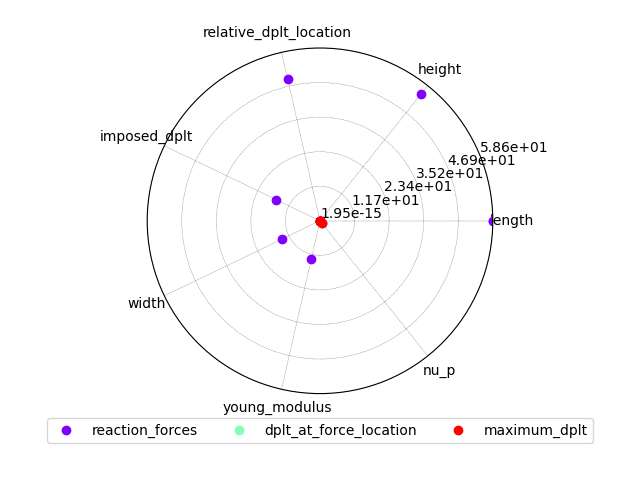
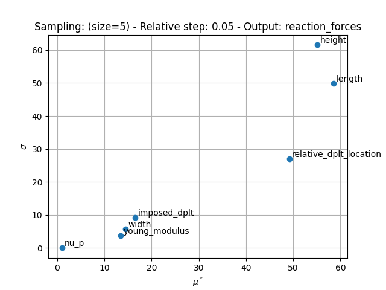
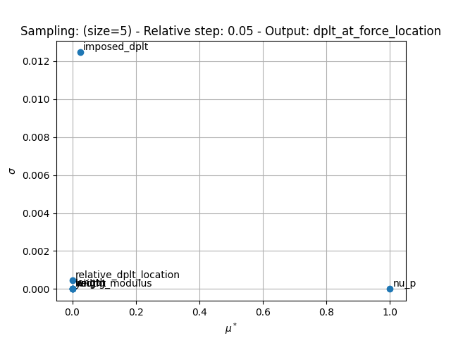
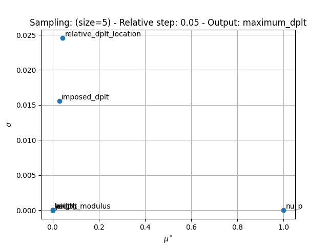

Note
Click here to download the full example code
Global sensitivity analysis: Morris and HSIC¶
The :class:~.SensitivityTool ranks the inputs of a model
by their influence on its outputs over a whole parameter space,
with the Morris or the HSIC method.
It either samples the model itself
or uses the samples of a DOE prepared in advance.
BendingTestAnalytical is used to illustrate the use of this tool.
For a local analysis around nominal values, see the One-factor-at-a-Time example.
The last section, with runs archived in MLflow, needs the mlflow extra.
Import the packages¶
%%
from __future__ import annotations
import logging
import shutil
from vimseo import EXAMPLE_RUNS_DIR
from vimseo.api import activate_logger
from vimseo.api import create_model
from vimseo.api import open_model_results
from vimseo.core.model_settings import IntegratedModelSettings
from vimseo.tools.doe.doe import DOEInputs
from vimseo.tools.doe.doe import DOESettings
from vimseo.tools.doe.doe import DOETool
from vimseo.tools.sensitivity.sensitivity import SensitivityTool
from vimseo.tools.sensitivity.sensitivity import SensitivityToolInputs
from vimseo.tools.sensitivity.sensitivity import SensitivityToolSettings
from vimseo.tools.space.space_tool import SpaceTool
activate_logger(level=logging.INFO)
Analysis definition¶
Let's start instantiate a model:
model_name = "BendingTestAnalytical"
load_case = "Cantilever"
model = create_model(
model_name,
load_case,
model_options=IntegratedModelSettings(
directory_archive_root=EXAMPLE_RUNS_DIR / "archive/sensitivity",
directory_scratch_root=EXAMPLE_RUNS_DIR / "scratch/sensitivity",
cache_file_path=EXAMPLE_RUNS_DIR
/ f"caches/sensitivity/{model_name}_{load_case}_cache.hdf",
),
)
Create a parameter space¶
Based on the above, we create a parameter space. In this example, all the parameters are defined by Uniform distributions. The parameter spaces are built with the help of the SpaceTool. By default, a parameter space per load case is generated (if load_cases=None):
space_tool = SpaceTool(working_directory="SpaceTool_results")
print(space_tool.get_available_space_builders())
Out:
['FromCenterAndCov', 'FromMinAndMax', 'FromModelCenterAndCov', 'FromModelMinAndMax', 'SpaceBuilder']
First, consider all input variables of the model except "relative_dplt_location".
retained_variables = model.get_input_data_names()
retained_variables.remove("relative_dplt_location")
space_tool.execute(
distribution_name="OTTriangularDistribution",
space_builder_name="FromModelCenterAndCov",
variable_names=retained_variables,
use_default_values_as_center=True,
model=model,
cov=0.05,
)
Out:
INFO - 09:51:30: Working directory is C:\Users\sebastien.bocquet\Dev\vddev\docs\runnable_examples\09_sensitivity_analysis\SpaceTool_results
C:\Users\sebastien.bocquet\Dev\vddev\.tox\doc\Lib\site-packages\pydantic\main.py:253: DeprecationWarning:
Conversion of an array with ndim > 0 to a scalar is deprecated, and will error in future. Ensure you extract a single element from your array before performing this operation. (Deprecated NumPy 1.25.)
SpaceToolResult(metadata=ToolResultMetadata(generic={'datetime': '28-10-2026_09-51-30', 'version': '0.1.8.dev32+g4ebb9ae49'}, misc={'tool_name': 'SpaceTool'}, settings={'distribution_name': 'OTTriangularDistribution', 'space_builder_name': 'FromModelCenterAndCov', 'minimum_values': None, 'maximum_values': None, 'center_value_expr': '', 'use_default_values_as_center': True, 'variable_names': ['length', 'width', 'height', 'imposed_dplt', 'young_modulus', 'nu_p'], 'center_values': None, 'cov': 0.05, 'truncate_to_model_bounds': True, 'lower_bounds': None, 'upper_bounds': None, 'size': 1}, report={}, model=None, tool_run_id='20261028T085130_95dfd840', parent_tool_run_id='', child_tool_run_ids=(), simulation_run_ids=()), parameter_space=Parameter space:
+---------------+-------------+-------------------+-------------+-------+-----------------------------------------------------------+--------------------+
| Name | Lower bound | Value | Upper bound | Type | Initial distribution | Transformation(x)= |
+---------------+-------------+-------------------+-------------+-------+-----------------------------------------------------------+--------------------+
| young_modulus | 199500 | 210000.0000000001 | 220500 | float | Triangular(lower=199500.0, mode=210000.0, upper=220500.0) | Trunc(x) |
| nu_p | 0.285 | 0.3 | 0.315 | float | Triangular(lower=0.285, mode=0.3, upper=0.315) | x |
| length | 570 | 600.0000000000003 | 630 | float | Triangular(lower=570.0, mode=600.0, upper=630.0) | Trunc(x) |
| width | 28.5 | 30.00000000000004 | 31.5 | float | Triangular(lower=28.5, mode=30.0, upper=31.5) | Trunc(x) |
| height | 38 | 40.00000000000004 | 42 | float | Triangular(lower=38.0, mode=40.0, upper=42.0) | Trunc(x) |
| imposed_dplt | -5.25 | -5 | -4.75 | float | Triangular(lower=-5.25, mode=-5.0, upper=-4.75) | x |
+---------------+-------------+-------------------+-------------+-------+-----------------------------------------------------------+--------------------+)
Then, specifically for "relative_dplt_location".
space_tool.execute(
distribution_name="OTTriangularDistribution",
space_builder_name="FromCenterAndCov",
center_values={"relative_dplt_location": 0.9},
cov=0.05,
)
print(space_tool.parameter_space)
Out:
INFO - 09:51:30: Working directory is C:\Users\sebastien.bocquet\Dev\vddev\docs\runnable_examples\09_sensitivity_analysis\SpaceTool_results
Uncertain space:
+------------------------+-------------------------------------------------------------+--------------------+
| Name | Initial distribution | Transformation(x)= |
+------------------------+-------------------------------------------------------------+--------------------+
| young_modulus | Triangular(lower=199500.0, mode=210000.0, upper=220500.0) | Trunc(x) |
| nu_p | Triangular(lower=0.285, mode=0.3, upper=0.315) | x |
| length | Triangular(lower=570.0, mode=600.0, upper=630.0) | Trunc(x) |
| width | Triangular(lower=28.5, mode=30.0, upper=31.5) | Trunc(x) |
| height | Triangular(lower=38.0, mode=40.0, upper=42.0) | Trunc(x) |
| imposed_dplt | Triangular(lower=-5.25, mode=-5.0, upper=-4.75) | x |
| relative_dplt_location | Triangular(lower=0.855, mode=0.9, upper=0.9450000000000001) | x |
+------------------------+-------------------------------------------------------------+--------------------+
Using the SensitivityTool¶
The tool samples the model over the parameter space and computes the sensitivity indices through the GEMSEO API. The settings of the analysis are:
sensitivity_algo: the sensitivity method, either"MorrisAnalysis"(default) or"HSICAnalysis",n_replicates: for the Morris method, the number of One-factor-at-a-Time trajectories, each one starting from a random point; along a trajectory, each input varies in turn, the previous ones keeping their new values,n_samples: the number of samples; if 0, it is deduced from the method, e.g.n_replicatestimes the number of inputs plus one for Morris.
output_names = ["reaction_forces", "dplt_at_force_location", "maximum_dplt"]
tool = SensitivityTool(working_directory="sensitivity_tool_results")
tool.execute(
inputs=SensitivityToolInputs(
model=model, parameter_space=space_tool.parameter_space
),
settings=SensitivityToolSettings(
output_names=output_names, sensitivity_algo="MorrisAnalysis", n_replicates=5
),
)
tool.save_results()
print(tool.result)
Out:
INFO - 09:51:30: Working directory is C:\Users\sebastien.bocquet\Dev\vddev\docs\runnable_examples\09_sensitivity_analysis\sensitivity_tool_results
INFO - 09:51:30: Working directory is C:\Users\sebastien.bocquet\Dev\vddev\docs\runnable_examples\09_sensitivity_analysis\sensitivity_tool_results\DOETool
INFO - 09:51:30: Working directory is C:\Users\sebastien.bocquet\Dev\vddev\docs\runnable_examples\09_sensitivity_analysis\sensitivity_tool_results\DOETool
INFO - 09:51:31: *** Start DOE_BendingTestAnalytical_Cantilever_MorrisDOE_40 execution ***
INFO - 09:51:31: DOE_BendingTestAnalytical_Cantilever_MorrisDOE_40
INFO - 09:51:31: Disciplines: Model BendingTestAnalytical: An analytical model for the bending of a parallelepipedic beam
INFO - 09:51:31:
INFO - 09:51:31: Load case:
INFO - 09:51:31: Load case Cantilever: A cantilever load case.
INFO - 09:51:31: Domain: Beam
INFO - 09:51:31:
INFO - 09:51:31: Boundary condition variables: imposed_dplt, relative_dplt_location
INFO - 09:51:31:
INFO - 09:51:31: Default values:
INFO - 09:51:31:
INFO - 09:51:31: Default geometrical variables:
INFO - 09:51:31: height = [40.00000000000004]
INFO - 09:51:31: length = [600.0000000000003]
INFO - 09:51:31: width = [30.000000000000036]
INFO - 09:51:31:
INFO - 09:51:31: Default boundary conditions variables:
INFO - 09:51:31: imposed_dplt = [-5.0]
INFO - 09:51:31: relative_dplt_location = [0.9]
INFO - 09:51:31:
INFO - 09:51:31: Default material variables:
INFO - 09:51:31: nu_p = [0.3]
INFO - 09:51:31: young_modulus = [210000.00000000006]
INFO - 09:51:31:
INFO - 09:51:31: Model inputs: height, imposed_dplt, length, nu_p, relative_dplt_location, width, young_modulus
INFO - 09:51:31: Model outputs: cpu_time, date, description, directory_archive_job, directory_archive_root, directory_scratch_job, directory_scratch_root, dplt, dplt_at_force_location, dplt_grid, error_code, job_name, load_case, location_max_dplt, machine, maximum_dplt, model, moment, moment_grid, n_cpus, persistent_result_files, reaction_forces, run_id, status, study_name, tool_run_id, user, vims_git_version
INFO - 09:51:31: MDO formulation: DisciplinaryOpt
INFO - 09:51:31: Optimization problem:
INFO - 09:51:31: minimize reaction_forces(young_modulus, nu_p, length, width, height, imposed_dplt, relative_dplt_location)
INFO - 09:51:31: with respect to height, imposed_dplt, length, nu_p, relative_dplt_location, width, young_modulus
INFO - 09:51:31: over the design space:
INFO - 09:51:31: +------------------------+-------------------------------------------------------------+--------------------+
INFO - 09:51:31: | Name | Initial distribution | Transformation(x)= |
INFO - 09:51:31: +------------------------+-------------------------------------------------------------+--------------------+
INFO - 09:51:31: | young_modulus | Triangular(lower=199500.0, mode=210000.0, upper=220500.0) | Trunc(x) |
INFO - 09:51:31: | nu_p | Triangular(lower=0.285, mode=0.3, upper=0.315) | x |
INFO - 09:51:31: | length | Triangular(lower=570.0, mode=600.0, upper=630.0) | Trunc(x) |
INFO - 09:51:31: | width | Triangular(lower=28.5, mode=30.0, upper=31.5) | Trunc(x) |
INFO - 09:51:31: | height | Triangular(lower=38.0, mode=40.0, upper=42.0) | Trunc(x) |
INFO - 09:51:31: | imposed_dplt | Triangular(lower=-5.25, mode=-5.0, upper=-4.75) | x |
INFO - 09:51:31: | relative_dplt_location | Triangular(lower=0.855, mode=0.9, upper=0.9450000000000001) | x |
INFO - 09:51:31: +------------------------+-------------------------------------------------------------+--------------------+
INFO - 09:51:31: Solving optimization problem with algorithm MorrisDOE:
INFO - 09:51:31: Current archive directory is C:\Users\sebastien.bocquet\Dev\vddev\docs\runnable_examples\model_runs\archive\sensitivity\default_study\BendingTestAnalytical\Cantilever\20261028T085131_e07d8996.
INFO - 09:51:31: 2%|▎ | 1/40 [00:00<00:03, 12.48 it/sec, feas=True, obj=-3.64e+3]
INFO - 09:51:31: Current archive directory is C:\Users\sebastien.bocquet\Dev\vddev\docs\runnable_examples\model_runs\archive\sensitivity\default_study\BendingTestAnalytical\Cantilever\20261028T085131_5a9864c1.
INFO - 09:51:31: 5%|▌ | 2/40 [00:00<00:02, 14.05 it/sec, feas=True, obj=-3.66e+3]
INFO - 09:51:31: Current archive directory is C:\Users\sebastien.bocquet\Dev\vddev\docs\runnable_examples\model_runs\archive\sensitivity\default_study\BendingTestAnalytical\Cantilever\20261028T085131_915af8e4.
INFO - 09:51:31: 8%|▊ | 3/40 [00:00<00:02, 15.77 it/sec, feas=True, obj=-3.66e+3]
INFO - 09:51:31: Current archive directory is C:\Users\sebastien.bocquet\Dev\vddev\docs\runnable_examples\model_runs\archive\sensitivity\default_study\BendingTestAnalytical\Cantilever\20261028T085131_3110bd07.
INFO - 09:51:31: 10%|█ | 4/40 [00:00<00:02, 16.50 it/sec, feas=True, obj=-3.61e+3]
INFO - 09:51:31: Current archive directory is C:\Users\sebastien.bocquet\Dev\vddev\docs\runnable_examples\model_runs\archive\sensitivity\default_study\BendingTestAnalytical\Cantilever\20261028T085131_c6f7b8c0.
INFO - 09:51:31: 12%|█▎ | 5/40 [00:00<00:01, 17.52 it/sec, feas=True, obj=-3.63e+3]
INFO - 09:51:31: Current archive directory is C:\Users\sebastien.bocquet\Dev\vddev\docs\runnable_examples\model_runs\archive\sensitivity\default_study\BendingTestAnalytical\Cantilever\20261028T085131_1185709d.
INFO - 09:51:31: 15%|█▌ | 6/40 [00:00<00:01, 17.05 it/sec, feas=True, obj=-3.68e+3]
INFO - 09:51:31: Current archive directory is C:\Users\sebastien.bocquet\Dev\vddev\docs\runnable_examples\model_runs\archive\sensitivity\default_study\BendingTestAnalytical\Cantilever\20261028T085131_b8b5012a.
INFO - 09:51:31: 18%|█▊ | 7/40 [00:00<00:01, 17.31 it/sec, feas=True, obj=-3.64e+3]
INFO - 09:51:31: Current archive directory is C:\Users\sebastien.bocquet\Dev\vddev\docs\runnable_examples\model_runs\archive\sensitivity\default_study\BendingTestAnalytical\Cantilever\20261028T085131_baa450a2.
INFO - 09:51:31: 20%|██ | 8/40 [00:00<00:01, 17.38 it/sec, feas=True, obj=-3.56e+3]
INFO - 09:51:31: Current archive directory is C:\Users\sebastien.bocquet\Dev\vddev\docs\runnable_examples\model_runs\archive\sensitivity\default_study\BendingTestAnalytical\Cantilever\20261028T085131_c0acfcbd.
INFO - 09:51:31: 22%|██▎ | 9/40 [00:00<00:01, 17.73 it/sec, feas=True, obj=-3.43e+3]
INFO - 09:51:31: Current archive directory is C:\Users\sebastien.bocquet\Dev\vddev\docs\runnable_examples\model_runs\archive\sensitivity\default_study\BendingTestAnalytical\Cantilever\20261028T085131_280fbca3.
INFO - 09:51:31: 25%|██▌ | 10/40 [00:00<00:01, 17.50 it/sec, feas=True, obj=-3.44e+3]
INFO - 09:51:31: Current archive directory is C:\Users\sebastien.bocquet\Dev\vddev\docs\runnable_examples\model_runs\archive\sensitivity\default_study\BendingTestAnalytical\Cantilever\20261028T085131_f9692e78.
INFO - 09:51:31: 28%|██▊ | 11/40 [00:00<00:01, 17.67 it/sec, feas=True, obj=-3.44e+3]
INFO - 09:51:31: Current archive directory is C:\Users\sebastien.bocquet\Dev\vddev\docs\runnable_examples\model_runs\archive\sensitivity\default_study\BendingTestAnalytical\Cantilever\20261028T085131_9b68ddcb.
INFO - 09:51:31: 30%|███ | 12/40 [00:00<00:01, 17.56 it/sec, feas=True, obj=-3.4e+3]
INFO - 09:51:31: Current archive directory is C:\Users\sebastien.bocquet\Dev\vddev\docs\runnable_examples\model_runs\archive\sensitivity\default_study\BendingTestAnalytical\Cantilever\20261028T085131_a2042c0c.
INFO - 09:51:31: 32%|███▎ | 13/40 [00:00<00:01, 17.83 it/sec, feas=True, obj=-3.42e+3]
INFO - 09:51:31: Current archive directory is C:\Users\sebastien.bocquet\Dev\vddev\docs\runnable_examples\model_runs\archive\sensitivity\default_study\BendingTestAnalytical\Cantilever\20261028T085131_b000cb1f.
INFO - 09:51:31: 35%|███▌ | 14/40 [00:00<00:01, 17.67 it/sec, feas=True, obj=-3.32e+3]
INFO - 09:51:31: Current archive directory is C:\Users\sebastien.bocquet\Dev\vddev\docs\runnable_examples\model_runs\archive\sensitivity\default_study\BendingTestAnalytical\Cantilever\20261028T085131_350af544.
INFO - 09:51:31: 38%|███▊ | 15/40 [00:00<00:01, 17.52 it/sec, feas=True, obj=-3.3e+3]
INFO - 09:51:31: Current archive directory is C:\Users\sebastien.bocquet\Dev\vddev\docs\runnable_examples\model_runs\archive\sensitivity\default_study\BendingTestAnalytical\Cantilever\20261028T085131_36df5c1f.
INFO - 09:51:31: 40%|████ | 16/40 [00:00<00:01, 17.69 it/sec, feas=True, obj=-3.27e+3]
INFO - 09:51:32: Current archive directory is C:\Users\sebastien.bocquet\Dev\vddev\docs\runnable_examples\model_runs\archive\sensitivity\default_study\BendingTestAnalytical\Cantilever\20261028T085131_39a1f104.
INFO - 09:51:32: 42%|████▎ | 17/40 [00:00<00:01, 17.44 it/sec, feas=True, obj=-3.3e+3]
INFO - 09:51:32: Current archive directory is C:\Users\sebastien.bocquet\Dev\vddev\docs\runnable_examples\model_runs\archive\sensitivity\default_study\BendingTestAnalytical\Cantilever\20261028T085132_4ccdcae2.
INFO - 09:51:32: 45%|████▌ | 18/40 [00:01<00:01, 17.45 it/sec, feas=True, obj=-3.32e+3]
INFO - 09:51:32: Current archive directory is C:\Users\sebastien.bocquet\Dev\vddev\docs\runnable_examples\model_runs\archive\sensitivity\default_study\BendingTestAnalytical\Cantilever\20261028T085132_f2a46428.
INFO - 09:51:32: 48%|████▊ | 19/40 [00:01<00:01, 17.51 it/sec, feas=True, obj=-3.32e+3]
INFO - 09:51:32: Current archive directory is C:\Users\sebastien.bocquet\Dev\vddev\docs\runnable_examples\model_runs\archive\sensitivity\default_study\BendingTestAnalytical\Cantilever\20261028T085132_6bdad687.
INFO - 09:51:32: 50%|█████ | 20/40 [00:01<00:01, 17.74 it/sec, feas=True, obj=-3.16e+3]
INFO - 09:51:32: Current archive directory is C:\Users\sebastien.bocquet\Dev\vddev\docs\runnable_examples\model_runs\archive\sensitivity\default_study\BendingTestAnalytical\Cantilever\20261028T085132_062d4c82.
INFO - 09:51:32: 52%|█████▎ | 21/40 [00:01<00:01, 17.62 it/sec, feas=True, obj=-3.17e+3]
INFO - 09:51:32: Current archive directory is C:\Users\sebastien.bocquet\Dev\vddev\docs\runnable_examples\model_runs\archive\sensitivity\default_study\BendingTestAnalytical\Cantilever\20261028T085132_4a5686d5.
INFO - 09:51:32: 55%|█████▌ | 22/40 [00:01<00:01, 17.56 it/sec, feas=True, obj=-3.25e+3]
INFO - 09:51:32: Current archive directory is C:\Users\sebastien.bocquet\Dev\vddev\docs\runnable_examples\model_runs\archive\sensitivity\default_study\BendingTestAnalytical\Cantilever\20261028T085132_b1ffb8f1.
INFO - 09:51:32: 57%|█████▊ | 23/40 [00:01<00:00, 17.65 it/sec, feas=True, obj=-3.24e+3]
INFO - 09:51:32: Current archive directory is C:\Users\sebastien.bocquet\Dev\vddev\docs\runnable_examples\model_runs\archive\sensitivity\default_study\BendingTestAnalytical\Cantilever\20261028T085132_be1c952d.
INFO - 09:51:32: 60%|██████ | 24/40 [00:01<00:00, 17.65 it/sec, feas=True, obj=-3.21e+3]
INFO - 09:51:32: Current archive directory is C:\Users\sebastien.bocquet\Dev\vddev\docs\runnable_examples\model_runs\archive\sensitivity\default_study\BendingTestAnalytical\Cantilever\20261028T085132_502ce0e0.
INFO - 09:51:32: 62%|██████▎ | 25/40 [00:01<00:00, 17.67 it/sec, feas=True, obj=-3.16e+3]
INFO - 09:51:32: Current archive directory is C:\Users\sebastien.bocquet\Dev\vddev\docs\runnable_examples\model_runs\archive\sensitivity\default_study\BendingTestAnalytical\Cantilever\20261028T085132_e3f0e1ba.
INFO - 09:51:32: 65%|██████▌ | 26/40 [00:01<00:00, 17.75 it/sec, feas=True, obj=-3.17e+3]
INFO - 09:51:32: Current archive directory is C:\Users\sebastien.bocquet\Dev\vddev\docs\runnable_examples\model_runs\archive\sensitivity\default_study\BendingTestAnalytical\Cantilever\20261028T085132_1ca5f832.
INFO - 09:51:32: 68%|██████▊ | 27/40 [00:01<00:00, 17.69 it/sec, feas=True, obj=-3.17e+3]
INFO - 09:51:32: Current archive directory is C:\Users\sebastien.bocquet\Dev\vddev\docs\runnable_examples\model_runs\archive\sensitivity\default_study\BendingTestAnalytical\Cantilever\20261028T085132_0d708fe7.
INFO - 09:51:32: 70%|███████ | 28/40 [00:01<00:00, 17.67 it/sec, feas=True, obj=-3.15e+3]
INFO - 09:51:32: Current archive directory is C:\Users\sebastien.bocquet\Dev\vddev\docs\runnable_examples\model_runs\archive\sensitivity\default_study\BendingTestAnalytical\Cantilever\20261028T085132_1af09747.
INFO - 09:51:32: 72%|███████▎ | 29/40 [00:01<00:00, 17.69 it/sec, feas=True, obj=-3.16e+3]
INFO - 09:51:32: Current archive directory is C:\Users\sebastien.bocquet\Dev\vddev\docs\runnable_examples\model_runs\archive\sensitivity\default_study\BendingTestAnalytical\Cantilever\20261028T085132_cc4cc9f9.
INFO - 09:51:32: 75%|███████▌ | 30/40 [00:01<00:00, 17.76 it/sec, feas=True, obj=-3.19e+3]
INFO - 09:51:32: Current archive directory is C:\Users\sebastien.bocquet\Dev\vddev\docs\runnable_examples\model_runs\archive\sensitivity\default_study\BendingTestAnalytical\Cantilever\20261028T085132_73865e37.
INFO - 09:51:32: 78%|███████▊ | 31/40 [00:01<00:00, 17.89 it/sec, feas=True, obj=-3.18e+3]
INFO - 09:51:32: Current archive directory is C:\Users\sebastien.bocquet\Dev\vddev\docs\runnable_examples\model_runs\archive\sensitivity\default_study\BendingTestAnalytical\Cantilever\20261028T085132_be95de0d.
INFO - 09:51:32: 80%|████████ | 32/40 [00:01<00:00, 17.79 it/sec, feas=True, obj=-3.15e+3]
INFO - 09:51:32: Current archive directory is C:\Users\sebastien.bocquet\Dev\vddev\docs\runnable_examples\model_runs\archive\sensitivity\default_study\BendingTestAnalytical\Cantilever\20261028T085132_a4f04cbf.
INFO - 09:51:32: 82%|████████▎ | 33/40 [00:01<00:00, 17.84 it/sec, feas=True, obj=-2.94e+3]
INFO - 09:51:32: Current archive directory is C:\Users\sebastien.bocquet\Dev\vddev\docs\runnable_examples\model_runs\archive\sensitivity\default_study\BendingTestAnalytical\Cantilever\20261028T085132_bcc31c49.
INFO - 09:51:32: 85%|████████▌ | 34/40 [00:01<00:00, 17.92 it/sec, feas=True, obj=-2.95e+3]
INFO - 09:51:32: Current archive directory is C:\Users\sebastien.bocquet\Dev\vddev\docs\runnable_examples\model_runs\archive\sensitivity\default_study\BendingTestAnalytical\Cantilever\20261028T085132_e5f0e09c.
INFO - 09:51:33: 88%|████████▊ | 35/40 [00:01<00:00, 17.84 it/sec, feas=True, obj=-2.95e+3]
INFO - 09:51:33: Current archive directory is C:\Users\sebastien.bocquet\Dev\vddev\docs\runnable_examples\model_runs\archive\sensitivity\default_study\BendingTestAnalytical\Cantilever\20261028T085133_240bcfe0.
INFO - 09:51:33: 90%|█████████ | 36/40 [00:02<00:00, 17.92 it/sec, feas=True, obj=-2.92e+3]
INFO - 09:51:33: Current archive directory is C:\Users\sebastien.bocquet\Dev\vddev\docs\runnable_examples\model_runs\archive\sensitivity\default_study\BendingTestAnalytical\Cantilever\20261028T085133_d7b16484.
INFO - 09:51:33: 92%|█████████▎| 37/40 [00:02<00:00, 17.86 it/sec, feas=True, obj=-2.93e+3]
INFO - 09:51:33: Current archive directory is C:\Users\sebastien.bocquet\Dev\vddev\docs\runnable_examples\model_runs\archive\sensitivity\default_study\BendingTestAnalytical\Cantilever\20261028T085133_e2500300.
INFO - 09:51:33: 95%|█████████▌| 38/40 [00:02<00:00, 17.91 it/sec, feas=True, obj=-2.95e+3]
INFO - 09:51:33: Current archive directory is C:\Users\sebastien.bocquet\Dev\vddev\docs\runnable_examples\model_runs\archive\sensitivity\default_study\BendingTestAnalytical\Cantilever\20261028T085133_7b89d1df.
INFO - 09:51:33: 98%|█████████▊| 39/40 [00:02<00:00, 17.87 it/sec, feas=True, obj=-2.94e+3]
INFO - 09:51:33: Current archive directory is C:\Users\sebastien.bocquet\Dev\vddev\docs\runnable_examples\model_runs\archive\sensitivity\default_study\BendingTestAnalytical\Cantilever\20261028T085133_04c83186.
INFO - 09:51:33: 100%|██████████| 40/40 [00:02<00:00, 17.94 it/sec, feas=True, obj=-2.86e+3]
INFO - 09:51:33: Optimization result:
INFO - 09:51:33: Optimizer info:
INFO - 09:51:33: Status: None
INFO - 09:51:33: Message: None
INFO - 09:51:33: Solution:
INFO - 09:51:33: Objective: -3676.2002678690196
INFO - 09:51:33: Design space:
INFO - 09:51:33: +------------------------+-------------------------------------------------------------+--------------------+
INFO - 09:51:33: | Name | Initial distribution | Transformation(x)= |
INFO - 09:51:33: +------------------------+-------------------------------------------------------------+--------------------+
INFO - 09:51:33: | young_modulus | Triangular(lower=199500.0, mode=210000.0, upper=220500.0) | Trunc(x) |
INFO - 09:51:33: | nu_p | Triangular(lower=0.285, mode=0.3, upper=0.315) | x |
INFO - 09:51:33: | length | Triangular(lower=570.0, mode=600.0, upper=630.0) | Trunc(x) |
INFO - 09:51:33: | width | Triangular(lower=28.5, mode=30.0, upper=31.5) | Trunc(x) |
INFO - 09:51:33: | height | Triangular(lower=38.0, mode=40.0, upper=42.0) | Trunc(x) |
INFO - 09:51:33: | imposed_dplt | Triangular(lower=-5.25, mode=-5.0, upper=-4.75) | x |
INFO - 09:51:33: | relative_dplt_location | Triangular(lower=0.855, mode=0.9, upper=0.9450000000000001) | x |
INFO - 09:51:33: +------------------------+-------------------------------------------------------------+--------------------+
INFO - 09:51:33: *** End DOE_BendingTestAnalytical_Cantilever_MorrisDOE_40 execution ***
INFO - 09:51:34: PICKLE fallback: key='analysis', type=<class 'gemseo.uncertainty.sensitivity.morris_analysis.MorrisAnalysis'>, value=<gemseo.uncertainty.sensitivity.morris_analysis.MorrisAnalysis object at 0x0000022ABE635280>
INFO - 09:51:34: Saving result to C:\Users\sebastien.bocquet\Dev\vddev\docs\runnable_examples\09_sensitivity_analysis\sensitivity_tool_results\SensitivityTool_result.hdf5
INFO - 09:51:34: PICKLE fallback: key='analysis', type=<class 'gemseo.uncertainty.sensitivity.morris_analysis.MorrisAnalysis'>, value=<gemseo.uncertainty.sensitivity.morris_analysis.MorrisAnalysis object at 0x0000022ABE635280>
INFO - 09:51:34: Saving result to C:\Users\sebastien.bocquet\Dev\vddev\docs\runnable_examples\09_sensitivity_analysis\sensitivity_tool_results\DOETool\DOETool_result.hdf5
Results of a sensitivity analysis.
{
"child_tool_run_ids": [
"20261028T085130_ae0f0d8e"
],
"generic": {
"datetime": "28-10-2026_09-51-30",
"version": "0.1.8.dev32+g4ebb9ae49"
},
"misc": {
"tool_name": "SensitivityTool"
},
"model": {
"dataflow": {
"PostBendingTestAnalytical_Cantilever": {
"inputs": [
"dplt",
"dplt_grid",
"moment",
"moment_grid",
"imposed_dplt_location",
"reaction_forces"
],
"outputs": [
"reaction_forces",
"maximum_dplt",
"dplt_grid",
"location_max_dplt",
"dplt",
"moment",
"moment_grid",
"dplt_at_force_location",
"error_code"
]
},
"PreBendingTestAnalytical_Cantilever": {
"inputs": [
"length",
"width",
"height",
"imposed_dplt",
"relative_dplt_location",
"young_modulus",
"nu_p"
],
"outputs": [
"imposed_dplt_location",
"quadratic_moment",
"reaction_forces",
"moment",
"moment_grid",
"solver",
"boundary",
"error_code"
]
},
"RunBendingTestAnalytical": {
"inputs": [
"solver",
"boundary",
"moment",
"moment_grid",
"young_modulus",
"quadratic_moment",
"nu_p"
],
"outputs": [
"dplt",
"dplt_grid",
"error_code"
]
},
"model_inputs": [
"length",
"width",
"height",
"imposed_dplt",
"relative_dplt_location",
"young_modulus",
"nu_p"
],
"model_outputs": [
"reaction_forces",
"moment",
"moment_grid",
"error_code",
"dplt",
"dplt_grid",
"maximum_dplt",
"location_max_dplt",
"dplt_at_force_location",
"model",
"load_case",
"description",
"job_name",
"persistent_result_files",
"n_cpus",
"date",
"cpu_time",
"user",
"machine",
"vims_git_version",
"directory_archive_root",
"directory_archive_job",
"directory_scratch_root",
"directory_scratch_job",
"run_id",
"tool_run_id",
"study_name",
"status"
],
"subroutine_names": []
},
"default_inputs": {
"boundary conditions variables": {
"imposed_dplt": [
-5.0
],
"relative_dplt_location": [
1.0
]
},
"geometrical variables": {
"height": [
40.0
],
"length": [
600.0
],
"width": [
30.0
]
},
"material variables": {
"nu_p": [
0.3
],
"young_modulus": [
210000.0
]
},
"numerical variables": {}
},
"load_case": {
"bc_variable_names": [
"imposed_dplt",
"relative_dplt_location"
],
"domain": "Beam",
"load": {
"direction": "",
"sign": "",
"type": ""
},
"name": "Cantilever",
"summary": "A cantilever load case."
},
"name": "BendingTestAnalytical",
"summary": " An analytical model for the bending of a parallelepipedic beam",
"verbose": false
},
"parent_tool_run_id": "",
"report": {
"doe_dataset_name": "DOE_BendingTestAnalytical_Cantilever_MorrisDOE_40",
"output_names": [
"reaction_forces",
"dplt_at_force_location",
"maximum_dplt"
]
},
"settings": {
"n_replicates": 5,
"n_samples": 0,
"output_names": [
"reaction_forces",
"dplt_at_force_location",
"maximum_dplt"
],
"sensitivity_algo": "MorrisAnalysis"
},
"simulation_run_ids": [
"20261028T085131_e07d8996",
"20261028T085131_5a9864c1",
"20261028T085131_915af8e4",
"20261028T085131_3110bd07",
"20261028T085131_c6f7b8c0",
"20261028T085131_1185709d",
"20261028T085131_b8b5012a",
"20261028T085131_baa450a2",
"20261028T085131_c0acfcbd",
"20261028T085131_280fbca3",
"20261028T085131_f9692e78",
"20261028T085131_9b68ddcb",
"20261028T085131_a2042c0c",
"20261028T085131_b000cb1f",
"20261028T085131_350af544",
"20261028T085131_36df5c1f",
"20261028T085131_39a1f104",
"20261028T085132_4ccdcae2",
"20261028T085132_f2a46428",
"20261028T085132_6bdad687",
"20261028T085132_062d4c82",
"20261028T085132_4a5686d5",
"20261028T085132_b1ffb8f1",
"20261028T085132_be1c952d",
"20261028T085132_502ce0e0",
"20261028T085132_e3f0e1ba",
"20261028T085132_1ca5f832",
"20261028T085132_0d708fe7",
"20261028T085132_1af09747",
"20261028T085132_cc4cc9f9",
"20261028T085132_73865e37",
"20261028T085132_be95de0d",
"20261028T085132_a4f04cbf",
"20261028T085132_bcc31c49",
"20261028T085132_e5f0e09c",
"20261028T085133_240bcfe0",
"20261028T085133_d7b16484",
"20261028T085133_e2500300",
"20261028T085133_7b89d1df",
"20261028T085133_04c83186"
],
"tool_run_id": "20261028T085130_ae4f84ce"
}
Input variables by decreasing order of influence:
For output reaction_forces: ['length', 'height', 'relative_dplt_location', 'imposed_dplt', 'width', 'young_modulus', 'nu_p'].
For output dplt_at_force_location: ['nu_p', 'imposed_dplt', 'relative_dplt_location', 'length', 'width', 'height', 'young_modulus'].
For output maximum_dplt: ['nu_p', 'relative_dplt_location', 'imposed_dplt', 'length', 'width', 'height', 'young_modulus'].
Sensitivity indices:
Index mu
reaction_forces: [{'young_modulus': array([-13.43064013]), 'nu_p': array([0.]), 'length': array([58.60982709]), 'width': array([-14.47192315]), 'height': array([-13.80474496]), 'imposed_dplt': array([16.55844226]), 'relative_dplt_location': array([49.1739949])}]
dplt_at_force_location: [{'young_modulus': array([8.8817842e-16]), 'nu_p': array([0.]), 'length': array([-1.01049536e-05]), 'width': array([-5.32907052e-16]), 'height': array([1.77635684e-16]), 'imposed_dplt': array([0.02475083]), 'relative_dplt_location': array([-0.00022711])}]
maximum_dplt: [{'young_modulus': array([-1.77635684e-16]), 'nu_p': array([0.]), 'length': array([9.25911667e-06]), 'width': array([-1.0658141e-15]), 'height': array([-1.77635684e-16]), 'imposed_dplt': array([0.02923962]), 'relative_dplt_location': array([0.04288046])}]
Index mu_star
reaction_forces: [{'young_modulus': array([13.43064013]), 'nu_p': array([1.]), 'length': array([58.60982709]), 'width': array([14.47192315]), 'height': array([55.10011756]), 'imposed_dplt': array([16.55844226]), 'relative_dplt_location': array([49.1739949])}]
dplt_at_force_location: [{'young_modulus': array([1.95399252e-15]), 'nu_p': array([1.]), 'length': array([1.24849806e-05]), 'width': array([4.4408921e-15]), 'height': array([2.66453526e-15]), 'imposed_dplt': array([0.02475083]), 'relative_dplt_location': array([0.00024446])}]
maximum_dplt: [{'young_modulus': array([1.95399252e-15]), 'nu_p': array([1.]), 'length': array([1.94426342e-05]), 'width': array([4.26325641e-15]), 'height': array([4.08562073e-15]), 'imposed_dplt': array([0.02923962]), 'relative_dplt_location': array([0.04288046])}]
Index sigma
reaction_forces: [{'young_modulus': array([3.67260496]), 'nu_p': array([0.]), 'length': array([49.90184971]), 'width': array([5.76286543]), 'height': array([61.55049071]), 'imposed_dplt': array([9.26333405]), 'relative_dplt_location': array([26.92516706])}]
dplt_at_force_location: [{'young_modulus': array([2.17558393e-15]), 'nu_p': array([0.]), 'length': array([2.32090004e-05]), 'width': array([5.31721495e-15]), 'height': array([3.34219545e-15]), 'imposed_dplt': array([0.01246174]), 'relative_dplt_location': array([0.00045632])}]
maximum_dplt: [{'young_modulus': array([2.59858603e-15]), 'nu_p': array([0.]), 'length': array([3.15207404e-05]), 'width': array([4.64577597e-15]), 'height': array([4.97379915e-15]), 'imposed_dplt': array([0.01555085]), 'relative_dplt_location': array([0.0245328])}]
Index relative_sigma
reaction_forces: [{'young_modulus': array([0.27344973]), 'nu_p': array([0.]), 'length': array([0.85142462]), 'width': array([0.39821006]), 'height': array([1.11706641]), 'imposed_dplt': array([0.5594327]), 'relative_dplt_location': array([0.54754891])}]
dplt_at_force_location: [{'young_modulus': array([1.11340443]), 'nu_p': array([0.]), 'length': array([1.85895367]), 'width': array([1.19733036]), 'height': array([1.25432585]), 'imposed_dplt': array([0.50348774]), 'relative_dplt_location': array([1.86663484])}]
maximum_dplt: [{'young_modulus': array([1.32988535]), 'nu_p': array([0.]), 'length': array([1.62121758]), 'width': array([1.08972474]), 'height': array([1.2173913]), 'imposed_dplt': array([0.53184165]), 'relative_dplt_location': array([0.57212065])}]
Index min
reaction_forces: [{'young_modulus': array([9.2905588]), 'nu_p': array([0.]), 'length': array([24.01397044]), 'width': array([8.21014976]), 'height': array([23.25186439]), 'imposed_dplt': array([8.39985622]), 'relative_dplt_location': array([26.91142661])}]
dplt_at_force_location: [{'young_modulus': array([0.]), 'nu_p': array([0.]), 'length': array([2.84046155e-08]), 'width': array([8.8817842e-16]), 'height': array([0.]), 'imposed_dplt': array([0.01297183]), 'relative_dplt_location': array([9.02381732e-06])}]
maximum_dplt: [{'young_modulus': array([0.]), 'nu_p': array([0.]), 'length': array([1.89089637e-06]), 'width': array([1.77635684e-15]), 'height': array([8.8817842e-16]), 'imposed_dplt': array([0.01527829]), 'relative_dplt_location': array([0.0216497])}]
Index max
reaction_forces: [{'young_modulus': array([18.38485335]), 'nu_p': array([0.]), 'length': array([157.00575767]), 'width': array([22.81785918]), 'height': array([103.23843151]), 'imposed_dplt': array([31.42358486]), 'relative_dplt_location': array([83.35034553])}]
dplt_at_force_location: [{'young_modulus': array([3.55271368e-15]), 'nu_p': array([0.]), 'length': array([5.63319641e-05]), 'width': array([9.76996262e-15]), 'height': array([5.32907052e-15]), 'imposed_dplt': array([0.04443667]), 'relative_dplt_location': array([0.00113868])}]
maximum_dplt: [{'young_modulus': array([4.4408921e-15]), 'nu_p': array([0.]), 'length': array([7.17543771e-05]), 'width': array([7.99360578e-15]), 'height': array([8.8817842e-15]), 'imposed_dplt': array([0.054728]), 'relative_dplt_location': array([0.07790166])}]
The Morris indices are, for each output and input component, statistics of the elementary effects of the input over the trajectories:
mu: their mean,mu_star: the mean of their absolute values, which measures the influence of the input,sigma: their standard deviation, which reveals non-linear effects and interactions,relative_sigma:sigmadivided bymu_star,minandmax: the extrema of their absolute values.
They can be tabulated; by default, the main indices mu_star are used:
tool.result.get_indices_dataframe()
Standard plots of a Morris analysis can be shown: a radar plot of the indices, a bar plot and a (\(\mu^*\), \(\sigma\)) plot for each output. Here, the interactive bar plot:
figures = tool.result.plot(output_names=output_names)
figures["bar_plot"]




Out:
C:\Users\sebastien.bocquet\Dev\vddev\.tox\doc\Lib\site-packages\gemseo\post\dataset\plots\_matplotlib\plot.py:87: UserWarning:
This figure includes Axes that are not compatible with tight_layout, so results might be incorrect.
C:\Users\sebastien.bocquet\Dev\vddev\.tox\doc\Lib\site-packages\matplotlib\cbook.py:1719: DeprecationWarning:
Conversion of an array with ndim > 0 to a scalar is deprecated, and will error in future. Ensure you extract a single element from your array before performing this operation. (Deprecated NumPy 1.25.)
Using the samples of a DOE prepared in advance¶
The samples can be computed beforehand by a :class:~.DOETool,
for instance on a cluster,
and then its result is passed to the :class:~.SensitivityTool as doe_result:
the model is not executed again.
This result records the DOE algorithm, which the tool checks.
For a Morris analysis, the DOE must be generated by the DOE algorithm
"MorrisDOE",
whose n_samples is the number of replicates times the number of inputs plus one.
Its settings are passed through algo_settings,
here the relative step of the trajectories in the unit hypercube.
n_replicates = 5
doe_tool = DOETool(working_directory="morris_doe_results")
doe_tool.execute(
inputs=DOEInputs(model=model, parameter_space=space_tool.parameter_space),
settings=DOESettings(
output_names=output_names,
algo="MorrisDOE",
n_samples=n_replicates * (space_tool.parameter_space.dimension + 1),
algo_settings={"step": 0.05},
),
)
doe_tool.result.dataset
Out:
INFO - 09:51:34: Working directory is C:\Users\sebastien.bocquet\Dev\vddev\docs\runnable_examples\09_sensitivity_analysis\morris_doe_results
INFO - 09:51:35: *** Start DOE_BendingTestAnalytical_Cantilever_MorrisDOE_40 execution ***
INFO - 09:51:35: DOE_BendingTestAnalytical_Cantilever_MorrisDOE_40
INFO - 09:51:35: Disciplines: Model BendingTestAnalytical: An analytical model for the bending of a parallelepipedic beam
INFO - 09:51:35:
INFO - 09:51:35: Load case:
INFO - 09:51:35: Load case Cantilever: A cantilever load case.
INFO - 09:51:35: Domain: Beam
INFO - 09:51:35:
INFO - 09:51:35: Boundary condition variables: imposed_dplt, relative_dplt_location
INFO - 09:51:35:
INFO - 09:51:35: Default values:
INFO - 09:51:35:
INFO - 09:51:35: Default geometrical variables:
INFO - 09:51:35: height = [40.00000000000004]
INFO - 09:51:35: length = [600.0000000000003]
INFO - 09:51:35: width = [30.000000000000036]
INFO - 09:51:35:
INFO - 09:51:35: Default boundary conditions variables:
INFO - 09:51:35: imposed_dplt = [-5.0]
INFO - 09:51:35: relative_dplt_location = [0.9]
INFO - 09:51:35:
INFO - 09:51:35: Default material variables:
INFO - 09:51:35: nu_p = [0.3]
INFO - 09:51:35: young_modulus = [210000.00000000006]
INFO - 09:51:35:
INFO - 09:51:35: Model inputs: height, imposed_dplt, length, nu_p, relative_dplt_location, width, young_modulus
INFO - 09:51:35: Model outputs: cpu_time, date, description, directory_archive_job, directory_archive_root, directory_scratch_job, directory_scratch_root, dplt, dplt_at_force_location, dplt_grid, error_code, job_name, load_case, location_max_dplt, machine, maximum_dplt, model, moment, moment_grid, n_cpus, persistent_result_files, reaction_forces, run_id, status, study_name, tool_run_id, user, vims_git_version
INFO - 09:51:35: MDO formulation: DisciplinaryOpt
INFO - 09:51:35: Optimization problem:
INFO - 09:51:35: minimize reaction_forces(young_modulus, nu_p, length, width, height, imposed_dplt, relative_dplt_location)
INFO - 09:51:35: with respect to height, imposed_dplt, length, nu_p, relative_dplt_location, width, young_modulus
INFO - 09:51:35: over the design space:
INFO - 09:51:35: +------------------------+-------------------------------------------------------------+--------------------+
INFO - 09:51:35: | Name | Initial distribution | Transformation(x)= |
INFO - 09:51:35: +------------------------+-------------------------------------------------------------+--------------------+
INFO - 09:51:35: | young_modulus | Triangular(lower=199500.0, mode=210000.0, upper=220500.0) | Trunc(x) |
INFO - 09:51:35: | nu_p | Triangular(lower=0.285, mode=0.3, upper=0.315) | x |
INFO - 09:51:35: | length | Triangular(lower=570.0, mode=600.0, upper=630.0) | Trunc(x) |
INFO - 09:51:35: | width | Triangular(lower=28.5, mode=30.0, upper=31.5) | Trunc(x) |
INFO - 09:51:35: | height | Triangular(lower=38.0, mode=40.0, upper=42.0) | Trunc(x) |
INFO - 09:51:35: | imposed_dplt | Triangular(lower=-5.25, mode=-5.0, upper=-4.75) | x |
INFO - 09:51:35: | relative_dplt_location | Triangular(lower=0.855, mode=0.9, upper=0.9450000000000001) | x |
INFO - 09:51:35: +------------------------+-------------------------------------------------------------+--------------------+
INFO - 09:51:35: Solving optimization problem with algorithm MorrisDOE:
INFO - 09:51:35: 2%|▎ | 1/40 [00:00<00:01, 38.28 it/sec, feas=True, obj=-3.64e+3]
INFO - 09:51:35: 5%|▌ | 2/40 [00:00<00:00, 51.75 it/sec, feas=True, obj=-3.66e+3]
INFO - 09:51:35: 8%|▊ | 3/40 [00:00<00:00, 42.61 it/sec, feas=True, obj=-3.66e+3]
INFO - 09:51:35: 10%|█ | 4/40 [00:00<00:00, 42.38 it/sec, feas=True, obj=-3.61e+3]
INFO - 09:51:35: 12%|█▎ | 5/40 [00:00<00:00, 39.25 it/sec, feas=True, obj=-3.63e+3]
INFO - 09:51:35: 15%|█▌ | 6/40 [00:00<00:00, 44.39 it/sec, feas=True, obj=-3.68e+3]
INFO - 09:51:35: 18%|█▊ | 7/40 [00:00<00:00, 42.06 it/sec, feas=True, obj=-3.64e+3]
INFO - 09:51:35: 20%|██ | 8/40 [00:00<00:00, 40.41 it/sec, feas=True, obj=-3.56e+3]
INFO - 09:51:35: 22%|██▎ | 9/40 [00:00<00:00, 42.04 it/sec, feas=True, obj=-3.43e+3]
INFO - 09:51:35: 25%|██▌ | 10/40 [00:00<00:00, 43.48 it/sec, feas=True, obj=-3.44e+3]
INFO - 09:51:35: 28%|██▊ | 11/40 [00:00<00:00, 43.54 it/sec, feas=True, obj=-3.44e+3]
INFO - 09:51:35: 30%|███ | 12/40 [00:00<00:00, 45.42 it/sec, feas=True, obj=-3.4e+3]
INFO - 09:51:35: 32%|███▎ | 13/40 [00:00<00:00, 46.78 it/sec, feas=True, obj=-3.42e+3]
INFO - 09:51:35: 35%|███▌ | 14/40 [00:00<00:00, 44.92 it/sec, feas=True, obj=-3.32e+3]
INFO - 09:51:35: 38%|███▊ | 15/40 [00:00<00:00, 45.02 it/sec, feas=True, obj=-3.3e+3]
INFO - 09:51:35: 40%|████ | 16/40 [00:00<00:00, 44.83 it/sec, feas=True, obj=-3.27e+3]
INFO - 09:51:35: 42%|████▎ | 17/40 [00:00<00:00, 45.61 it/sec, feas=True, obj=-3.3e+3]
INFO - 09:51:35: 45%|████▌ | 18/40 [00:00<00:00, 44.72 it/sec, feas=True, obj=-3.32e+3]
INFO - 09:51:35: 48%|████▊ | 19/40 [00:00<00:00, 44.78 it/sec, feas=True, obj=-3.32e+3]
INFO - 09:51:35: 50%|█████ | 20/40 [00:00<00:00, 44.21 it/sec, feas=True, obj=-3.16e+3]
INFO - 09:51:35: 52%|█████▎ | 21/40 [00:00<00:00, 43.39 it/sec, feas=True, obj=-3.17e+3]
INFO - 09:51:35: 55%|█████▌ | 22/40 [00:00<00:00, 42.47 it/sec, feas=True, obj=-3.25e+3]
INFO - 09:51:35: 57%|█████▊ | 23/40 [00:00<00:00, 43.13 it/sec, feas=True, obj=-3.24e+3]
INFO - 09:51:35: 60%|██████ | 24/40 [00:00<00:00, 42.63 it/sec, feas=True, obj=-3.21e+3]
INFO - 09:51:35: 62%|██████▎ | 25/40 [00:00<00:00, 41.64 it/sec, feas=True, obj=-3.16e+3]
INFO - 09:51:35: 65%|██████▌ | 26/40 [00:00<00:00, 41.30 it/sec, feas=True, obj=-3.17e+3]
INFO - 09:51:35: 68%|██████▊ | 27/40 [00:00<00:00, 41.85 it/sec, feas=True, obj=-3.17e+3]
INFO - 09:51:35: 70%|███████ | 28/40 [00:00<00:00, 42.58 it/sec, feas=True, obj=-3.15e+3]
INFO - 09:51:35: 72%|███████▎ | 29/40 [00:00<00:00, 42.07 it/sec, feas=True, obj=-3.16e+3]
INFO - 09:51:35: 75%|███████▌ | 30/40 [00:00<00:00, 42.16 it/sec, feas=True, obj=-3.19e+3]
INFO - 09:51:35: 78%|███████▊ | 31/40 [00:00<00:00, 42.35 it/sec, feas=True, obj=-3.18e+3]
INFO - 09:51:35: 80%|████████ | 32/40 [00:00<00:00, 42.39 it/sec, feas=True, obj=-3.15e+3]
INFO - 09:51:35: 82%|████████▎ | 33/40 [00:00<00:00, 42.05 it/sec, feas=True, obj=-2.94e+3]
INFO - 09:51:35: 85%|████████▌ | 34/40 [00:00<00:00, 42.41 it/sec, feas=True, obj=-2.95e+3]
INFO - 09:51:35: 88%|████████▊ | 35/40 [00:00<00:00, 42.24 it/sec, feas=True, obj=-2.95e+3]
INFO - 09:51:35: 90%|█████████ | 36/40 [00:00<00:00, 42.20 it/sec, feas=True, obj=-2.92e+3]
INFO - 09:51:35: 92%|█████████▎| 37/40 [00:00<00:00, 42.06 it/sec, feas=True, obj=-2.93e+3]
INFO - 09:51:35: 95%|█████████▌| 38/40 [00:00<00:00, 41.60 it/sec, feas=True, obj=-2.95e+3]
INFO - 09:51:35: 98%|█████████▊| 39/40 [00:00<00:00, 41.93 it/sec, feas=True, obj=-2.94e+3]
INFO - 09:51:36: 100%|██████████| 40/40 [00:00<00:00, 41.70 it/sec, feas=True, obj=-2.86e+3]
INFO - 09:51:36: Optimization result:
INFO - 09:51:36: Optimizer info:
INFO - 09:51:36: Status: None
INFO - 09:51:36: Message: None
INFO - 09:51:36: Solution:
INFO - 09:51:36: Objective: -3676.2002678690196
INFO - 09:51:36: Design space:
INFO - 09:51:36: +------------------------+-------------------------------------------------------------+--------------------+
INFO - 09:51:36: | Name | Initial distribution | Transformation(x)= |
INFO - 09:51:36: +------------------------+-------------------------------------------------------------+--------------------+
INFO - 09:51:36: | young_modulus | Triangular(lower=199500.0, mode=210000.0, upper=220500.0) | Trunc(x) |
INFO - 09:51:36: | nu_p | Triangular(lower=0.285, mode=0.3, upper=0.315) | x |
INFO - 09:51:36: | length | Triangular(lower=570.0, mode=600.0, upper=630.0) | Trunc(x) |
INFO - 09:51:36: | width | Triangular(lower=28.5, mode=30.0, upper=31.5) | Trunc(x) |
INFO - 09:51:36: | height | Triangular(lower=38.0, mode=40.0, upper=42.0) | Trunc(x) |
INFO - 09:51:36: | imposed_dplt | Triangular(lower=-5.25, mode=-5.0, upper=-4.75) | x |
INFO - 09:51:36: | relative_dplt_location | Triangular(lower=0.855, mode=0.9, upper=0.9450000000000001) | x |
INFO - 09:51:36: +------------------------+-------------------------------------------------------------+--------------------+
INFO - 09:51:36: *** End DOE_BendingTestAnalytical_Cantilever_MorrisDOE_40 execution ***
The Morris indices divide the output variations by the step of the DOE. This step is read from the settings recorded in the DOE result, so it does not have to be passed again and cannot differ from the samples.
tool = SensitivityTool(working_directory="morris_from_doe_results")
tool.execute(
inputs=SensitivityToolInputs(doe_result=doe_tool.result),
settings=SensitivityToolSettings(
output_names=output_names, sensitivity_algo="MorrisAnalysis"
),
)
tool.result.get_indices_dataframe("sigma")
Out:
INFO - 09:51:36: Working directory is C:\Users\sebastien.bocquet\Dev\vddev\docs\runnable_examples\09_sensitivity_analysis\morris_from_doe_results
INFO - 09:51:36: Working directory is C:\Users\sebastien.bocquet\Dev\vddev\docs\runnable_examples\09_sensitivity_analysis\morris_from_doe_results\DOETool
INFO - 09:51:36: PICKLE fallback: key='analysis', type=<class 'gemseo.uncertainty.sensitivity.morris_analysis.MorrisAnalysis'>, value=<gemseo.uncertainty.sensitivity.morris_analysis.MorrisAnalysis object at 0x0000022AC1757590>
A HSIC analysis requires samples that are independent and distributed
according to the probability distribution of the parameter space,
i.e. a Monte Carlo sampling ("OT_MONTE_CARLO", "OT_RANDOM" or "MC")
or a Latin Hypercube Sampling that is not optimized
("OT_LHS", "PYDOE_LHS" without criterion
or "LHS" without optimization).
An optimized Latin Hypercube Sampling or a quasi Monte Carlo sequence
is not suitable: it spreads its samples, which are then not independent
and bias the HSIC estimators.
doe_tool = DOETool(working_directory="monte_carlo_doe_results")
doe_tool.execute(
inputs=DOEInputs(model=model, parameter_space=space_tool.parameter_space),
settings=DOESettings(
output_names=output_names, algo="OT_MONTE_CARLO", n_samples=30
),
)
Out:
INFO - 09:51:36: Working directory is C:\Users\sebastien.bocquet\Dev\vddev\docs\runnable_examples\09_sensitivity_analysis\monte_carlo_doe_results
INFO - 09:51:37: *** Start DOE_BendingTestAnalytical_Cantilever_OT_MONTE_CARLO_30 execution ***
INFO - 09:51:37: DOE_BendingTestAnalytical_Cantilever_OT_MONTE_CARLO_30
INFO - 09:51:37: Disciplines: Model BendingTestAnalytical: An analytical model for the bending of a parallelepipedic beam
INFO - 09:51:37:
INFO - 09:51:37: Load case:
INFO - 09:51:37: Load case Cantilever: A cantilever load case.
INFO - 09:51:37: Domain: Beam
INFO - 09:51:37:
INFO - 09:51:37: Boundary condition variables: imposed_dplt, relative_dplt_location
INFO - 09:51:37:
INFO - 09:51:37: Default values:
INFO - 09:51:37:
INFO - 09:51:37: Default geometrical variables:
INFO - 09:51:37: height = [40.00000000000004]
INFO - 09:51:37: length = [600.0000000000003]
INFO - 09:51:37: width = [30.000000000000036]
INFO - 09:51:37:
INFO - 09:51:37: Default boundary conditions variables:
INFO - 09:51:37: imposed_dplt = [-5.0]
INFO - 09:51:37: relative_dplt_location = [0.9]
INFO - 09:51:37:
INFO - 09:51:37: Default material variables:
INFO - 09:51:37: nu_p = [0.3]
INFO - 09:51:37: young_modulus = [210000.00000000006]
INFO - 09:51:37:
INFO - 09:51:37: Model inputs: height, imposed_dplt, length, nu_p, relative_dplt_location, width, young_modulus
INFO - 09:51:37: Model outputs: cpu_time, date, description, directory_archive_job, directory_archive_root, directory_scratch_job, directory_scratch_root, dplt, dplt_at_force_location, dplt_grid, error_code, job_name, load_case, location_max_dplt, machine, maximum_dplt, model, moment, moment_grid, n_cpus, persistent_result_files, reaction_forces, run_id, status, study_name, tool_run_id, user, vims_git_version
INFO - 09:51:37: MDO formulation: DisciplinaryOpt
INFO - 09:51:37: Optimization problem:
INFO - 09:51:37: minimize reaction_forces(young_modulus, nu_p, length, width, height, imposed_dplt, relative_dplt_location)
INFO - 09:51:37: with respect to height, imposed_dplt, length, nu_p, relative_dplt_location, width, young_modulus
INFO - 09:51:37: over the design space:
INFO - 09:51:37: +------------------------+-------------------------------------------------------------+--------------------+
INFO - 09:51:37: | Name | Initial distribution | Transformation(x)= |
INFO - 09:51:37: +------------------------+-------------------------------------------------------------+--------------------+
INFO - 09:51:37: | young_modulus | Triangular(lower=199500.0, mode=210000.0, upper=220500.0) | Trunc(x) |
INFO - 09:51:37: | nu_p | Triangular(lower=0.285, mode=0.3, upper=0.315) | x |
INFO - 09:51:37: | length | Triangular(lower=570.0, mode=600.0, upper=630.0) | Trunc(x) |
INFO - 09:51:37: | width | Triangular(lower=28.5, mode=30.0, upper=31.5) | Trunc(x) |
INFO - 09:51:37: | height | Triangular(lower=38.0, mode=40.0, upper=42.0) | Trunc(x) |
INFO - 09:51:37: | imposed_dplt | Triangular(lower=-5.25, mode=-5.0, upper=-4.75) | x |
INFO - 09:51:37: | relative_dplt_location | Triangular(lower=0.855, mode=0.9, upper=0.9450000000000001) | x |
INFO - 09:51:37: +------------------------+-------------------------------------------------------------+--------------------+
INFO - 09:51:37: Solving optimization problem with algorithm OT_MONTE_CARLO:
INFO - 09:51:37: Current archive directory is C:\Users\sebastien.bocquet\Dev\vddev\docs\runnable_examples\model_runs\archive\sensitivity\default_study\BendingTestAnalytical\Cantilever\20261028T085137_d0aa782f.
INFO - 09:51:37: 3%|▎ | 1/30 [00:00<00:01, 20.92 it/sec, feas=True, obj=-2.94e+3]
INFO - 09:51:37: Current archive directory is C:\Users\sebastien.bocquet\Dev\vddev\docs\runnable_examples\model_runs\archive\sensitivity\default_study\BendingTestAnalytical\Cantilever\20261028T085137_b29a4b81.
INFO - 09:51:37: 7%|▋ | 2/30 [00:00<00:01, 20.05 it/sec, feas=True, obj=-3.98e+3]
INFO - 09:51:37: Current archive directory is C:\Users\sebastien.bocquet\Dev\vddev\docs\runnable_examples\model_runs\archive\sensitivity\default_study\BendingTestAnalytical\Cantilever\20261028T085137_56a932e3.
INFO - 09:51:37: 10%|█ | 3/30 [00:00<00:01, 18.96 it/sec, feas=True, obj=-2.63e+3]
INFO - 09:51:37: Current archive directory is C:\Users\sebastien.bocquet\Dev\vddev\docs\runnable_examples\model_runs\archive\sensitivity\default_study\BendingTestAnalytical\Cantilever\20261028T085137_23de5bb8.
INFO - 09:51:37: 13%|█▎ | 4/30 [00:00<00:01, 18.38 it/sec, feas=True, obj=-2.98e+3]
INFO - 09:51:37: Current archive directory is C:\Users\sebastien.bocquet\Dev\vddev\docs\runnable_examples\model_runs\archive\sensitivity\default_study\BendingTestAnalytical\Cantilever\20261028T085137_e503c23e.
INFO - 09:51:37: 17%|█▋ | 5/30 [00:00<00:01, 19.41 it/sec, feas=True, obj=-3.29e+3]
INFO - 09:51:37: Current archive directory is C:\Users\sebastien.bocquet\Dev\vddev\docs\runnable_examples\model_runs\archive\sensitivity\default_study\BendingTestAnalytical\Cantilever\20261028T085137_18bb92d4.
INFO - 09:51:37: 20%|██ | 6/30 [00:00<00:01, 19.84 it/sec, feas=True, obj=-2.93e+3]
INFO - 09:51:37: Current archive directory is C:\Users\sebastien.bocquet\Dev\vddev\docs\runnable_examples\model_runs\archive\sensitivity\default_study\BendingTestAnalytical\Cantilever\20261028T085137_dd3687b6.
INFO - 09:51:37: 23%|██▎ | 7/30 [00:00<00:01, 20.12 it/sec, feas=True, obj=-3.26e+3]
INFO - 09:51:37: Current archive directory is C:\Users\sebastien.bocquet\Dev\vddev\docs\runnable_examples\model_runs\archive\sensitivity\default_study\BendingTestAnalytical\Cantilever\20261028T085137_02411918.
INFO - 09:51:37: 27%|██▋ | 8/30 [00:00<00:01, 18.72 it/sec, feas=True, obj=-3.29e+3]
INFO - 09:51:37: Current archive directory is C:\Users\sebastien.bocquet\Dev\vddev\docs\runnable_examples\model_runs\archive\sensitivity\default_study\BendingTestAnalytical\Cantilever\20261028T085137_5cbbd101.
INFO - 09:51:37: 30%|███ | 9/30 [00:00<00:01, 18.61 it/sec, feas=True, obj=-3.32e+3]
INFO - 09:51:37: Current archive directory is C:\Users\sebastien.bocquet\Dev\vddev\docs\runnable_examples\model_runs\archive\sensitivity\default_study\BendingTestAnalytical\Cantilever\20261028T085137_86364169.
INFO - 09:51:37: 33%|███▎ | 10/30 [00:00<00:01, 18.56 it/sec, feas=True, obj=-3.32e+3]
INFO - 09:51:37: Current archive directory is C:\Users\sebastien.bocquet\Dev\vddev\docs\runnable_examples\model_runs\archive\sensitivity\default_study\BendingTestAnalytical\Cantilever\20261028T085137_73d71d0e.
INFO - 09:51:37: 37%|███▋ | 11/30 [00:00<00:01, 18.75 it/sec, feas=True, obj=-3.4e+3]
INFO - 09:51:37: Current archive directory is C:\Users\sebastien.bocquet\Dev\vddev\docs\runnable_examples\model_runs\archive\sensitivity\default_study\BendingTestAnalytical\Cantilever\20261028T085137_70efea17.
INFO - 09:51:37: 40%|████ | 12/30 [00:00<00:00, 18.03 it/sec, feas=True, obj=-3.96e+3]
INFO - 09:51:37: Current archive directory is C:\Users\sebastien.bocquet\Dev\vddev\docs\runnable_examples\model_runs\archive\sensitivity\default_study\BendingTestAnalytical\Cantilever\20261028T085137_76d26c3d.
INFO - 09:51:37: 43%|████▎ | 13/30 [00:00<00:00, 18.10 it/sec, feas=True, obj=-2.57e+3]
INFO - 09:51:37: Current archive directory is C:\Users\sebastien.bocquet\Dev\vddev\docs\runnable_examples\model_runs\archive\sensitivity\default_study\BendingTestAnalytical\Cantilever\20261028T085137_22d5b9fa.
INFO - 09:51:37: 47%|████▋ | 14/30 [00:00<00:00, 18.39 it/sec, feas=True, obj=-3.24e+3]
INFO - 09:51:37: Current archive directory is C:\Users\sebastien.bocquet\Dev\vddev\docs\runnable_examples\model_runs\archive\sensitivity\default_study\BendingTestAnalytical\Cantilever\20261028T085137_91079b61.
INFO - 09:51:38: 50%|█████ | 15/30 [00:00<00:00, 18.33 it/sec, feas=True, obj=-3.27e+3]
INFO - 09:51:38: Current archive directory is C:\Users\sebastien.bocquet\Dev\vddev\docs\runnable_examples\model_runs\archive\sensitivity\default_study\BendingTestAnalytical\Cantilever\20261028T085138_4a2e5a7a.
INFO - 09:51:38: 53%|█████▎ | 16/30 [00:00<00:00, 18.09 it/sec, feas=True, obj=-3.46e+3]
INFO - 09:51:38: Current archive directory is C:\Users\sebastien.bocquet\Dev\vddev\docs\runnable_examples\model_runs\archive\sensitivity\default_study\BendingTestAnalytical\Cantilever\20261028T085138_9daba59b.
INFO - 09:51:38: 57%|█████▋ | 17/30 [00:00<00:00, 18.16 it/sec, feas=True, obj=-3.84e+3]
INFO - 09:51:38: Current archive directory is C:\Users\sebastien.bocquet\Dev\vddev\docs\runnable_examples\model_runs\archive\sensitivity\default_study\BendingTestAnalytical\Cantilever\20261028T085138_39f1fbe2.
INFO - 09:51:38: 60%|██████ | 18/30 [00:01<00:00, 17.99 it/sec, feas=True, obj=-3.87e+3]
INFO - 09:51:38: Current archive directory is C:\Users\sebastien.bocquet\Dev\vddev\docs\runnable_examples\model_runs\archive\sensitivity\default_study\BendingTestAnalytical\Cantilever\20261028T085138_57afc556.
INFO - 09:51:38: 63%|██████▎ | 19/30 [00:01<00:00, 18.15 it/sec, feas=True, obj=-2.72e+3]
INFO - 09:51:38: Current archive directory is C:\Users\sebastien.bocquet\Dev\vddev\docs\runnable_examples\model_runs\archive\sensitivity\default_study\BendingTestAnalytical\Cantilever\20261028T085138_a1835d45.
INFO - 09:51:38: 67%|██████▋ | 20/30 [00:01<00:00, 17.97 it/sec, feas=True, obj=-3.84e+3]
INFO - 09:51:38: Current archive directory is C:\Users\sebastien.bocquet\Dev\vddev\docs\runnable_examples\model_runs\archive\sensitivity\default_study\BendingTestAnalytical\Cantilever\20261028T085138_f98500cd.
INFO - 09:51:38: 70%|███████ | 21/30 [00:01<00:00, 17.84 it/sec, feas=True, obj=-3.21e+3]
INFO - 09:51:38: Current archive directory is C:\Users\sebastien.bocquet\Dev\vddev\docs\runnable_examples\model_runs\archive\sensitivity\default_study\BendingTestAnalytical\Cantilever\20261028T085138_15034240.
INFO - 09:51:38: 73%|███████▎ | 22/30 [00:01<00:00, 17.74 it/sec, feas=True, obj=-3.5e+3]
INFO - 09:51:38: Current archive directory is C:\Users\sebastien.bocquet\Dev\vddev\docs\runnable_examples\model_runs\archive\sensitivity\default_study\BendingTestAnalytical\Cantilever\20261028T085138_febb4b69.
INFO - 09:51:38: 77%|███████▋ | 23/30 [00:01<00:00, 17.64 it/sec, feas=True, obj=-2.96e+3]
INFO - 09:51:38: Current archive directory is C:\Users\sebastien.bocquet\Dev\vddev\docs\runnable_examples\model_runs\archive\sensitivity\default_study\BendingTestAnalytical\Cantilever\20261028T085138_a0e70de1.
INFO - 09:51:38: 80%|████████ | 24/30 [00:01<00:00, 17.58 it/sec, feas=True, obj=-3.38e+3]
INFO - 09:51:38: Current archive directory is C:\Users\sebastien.bocquet\Dev\vddev\docs\runnable_examples\model_runs\archive\sensitivity\default_study\BendingTestAnalytical\Cantilever\20261028T085138_155e3da6.
INFO - 09:51:38: 83%|████████▎ | 25/30 [00:01<00:00, 17.51 it/sec, feas=True, obj=-3.22e+3]
INFO - 09:51:38: Current archive directory is C:\Users\sebastien.bocquet\Dev\vddev\docs\runnable_examples\model_runs\archive\sensitivity\default_study\BendingTestAnalytical\Cantilever\20261028T085138_7bf7fc8d.
INFO - 09:51:38: 87%|████████▋ | 26/30 [00:01<00:00, 17.51 it/sec, feas=True, obj=-3.34e+3]
INFO - 09:51:38: Current archive directory is C:\Users\sebastien.bocquet\Dev\vddev\docs\runnable_examples\model_runs\archive\sensitivity\default_study\BendingTestAnalytical\Cantilever\20261028T085138_8615229d.
INFO - 09:51:38: 90%|█████████ | 27/30 [00:01<00:00, 17.54 it/sec, feas=True, obj=-3.77e+3]
INFO - 09:51:38: Current archive directory is C:\Users\sebastien.bocquet\Dev\vddev\docs\runnable_examples\model_runs\archive\sensitivity\default_study\BendingTestAnalytical\Cantilever\20261028T085138_fd7f3735.
INFO - 09:51:38: 93%|█████████▎| 28/30 [00:01<00:00, 17.46 it/sec, feas=True, obj=-2.83e+3]
INFO - 09:51:38: Current archive directory is C:\Users\sebastien.bocquet\Dev\vddev\docs\runnable_examples\model_runs\archive\sensitivity\default_study\BendingTestAnalytical\Cantilever\20261028T085138_ed77b462.
INFO - 09:51:38: 97%|█████████▋| 29/30 [00:01<00:00, 17.42 it/sec, feas=True, obj=-3.22e+3]
INFO - 09:51:38: Current archive directory is C:\Users\sebastien.bocquet\Dev\vddev\docs\runnable_examples\model_runs\archive\sensitivity\default_study\BendingTestAnalytical\Cantilever\20261028T085138_cdb6cbe6.
INFO - 09:51:38: 100%|██████████| 30/30 [00:01<00:00, 17.36 it/sec, feas=True, obj=-3.63e+3]
INFO - 09:51:38: Optimization result:
INFO - 09:51:38: Optimizer info:
INFO - 09:51:38: Status: None
INFO - 09:51:38: Message: None
INFO - 09:51:38: Solution:
INFO - 09:51:38: Objective: -3981.1997801639955
INFO - 09:51:38: Design space:
INFO - 09:51:38: +------------------------+-------------------------------------------------------------+--------------------+
INFO - 09:51:38: | Name | Initial distribution | Transformation(x)= |
INFO - 09:51:38: +------------------------+-------------------------------------------------------------+--------------------+
INFO - 09:51:38: | young_modulus | Triangular(lower=199500.0, mode=210000.0, upper=220500.0) | Trunc(x) |
INFO - 09:51:38: | nu_p | Triangular(lower=0.285, mode=0.3, upper=0.315) | x |
INFO - 09:51:38: | length | Triangular(lower=570.0, mode=600.0, upper=630.0) | Trunc(x) |
INFO - 09:51:38: | width | Triangular(lower=28.5, mode=30.0, upper=31.5) | Trunc(x) |
INFO - 09:51:38: | height | Triangular(lower=38.0, mode=40.0, upper=42.0) | Trunc(x) |
INFO - 09:51:38: | imposed_dplt | Triangular(lower=-5.25, mode=-5.0, upper=-4.75) | x |
INFO - 09:51:38: | relative_dplt_location | Triangular(lower=0.855, mode=0.9, upper=0.9450000000000001) | x |
INFO - 09:51:38: +------------------------+-------------------------------------------------------------+--------------------+
INFO - 09:51:38: *** End DOE_BendingTestAnalytical_Cantilever_OT_MONTE_CARLO_30 execution ***
DOEResult(metadata=ToolResultMetadata(generic={'datetime': '28-10-2026_09-51-36', 'version': '0.1.8.dev32+g4ebb9ae49'}, misc={'tool_name': 'DOETool'}, settings={'output_names': ['reaction_forces', 'dplt_at_force_location', 'maximum_dplt'], 'n_samples': 30, 'algo': 'OT_MONTE_CARLO', 'algo_settings': {'n_samples': 30, 'seed': None}}, report={}, model=ModelDescription(name='BendingTestAnalytical', summary=' An analytical model for the bending of a parallelepipedic beam', load_case=Beam_Cantilever(name='Cantilever', domain='Beam', summary='A cantilever load case.', bc_variable_names=['imposed_dplt', 'relative_dplt_location'], load=Load(direction='', sign='', type='')), dataflow={'model_inputs': ['length', 'width', 'height', 'imposed_dplt', 'relative_dplt_location', 'young_modulus', 'nu_p'], 'model_outputs': ['reaction_forces', 'moment', 'moment_grid', 'error_code', 'dplt', 'dplt_grid', 'maximum_dplt', 'location_max_dplt', 'dplt_at_force_location', 'model', 'load_case', 'description', 'job_name', 'persistent_result_files', 'n_cpus', 'date', 'cpu_time', 'user', 'machine', 'vims_git_version', 'directory_archive_root', 'directory_archive_job', 'directory_scratch_root', 'directory_scratch_job', 'run_id', 'tool_run_id', 'study_name', 'status'], 'PreBendingTestAnalytical_Cantilever': {'inputs': ['length', 'width', 'height', 'imposed_dplt', 'relative_dplt_location', 'young_modulus', 'nu_p'], 'outputs': ['imposed_dplt_location', 'quadratic_moment', 'reaction_forces', 'moment', 'moment_grid', 'solver', 'boundary', 'error_code']}, 'RunBendingTestAnalytical': {'inputs': ['solver', 'boundary', 'moment', 'moment_grid', 'young_modulus', 'quadratic_moment', 'nu_p'], 'outputs': ['dplt', 'dplt_grid', 'error_code']}, 'PostBendingTestAnalytical_Cantilever': {'inputs': ['dplt', 'dplt_grid', 'moment', 'moment_grid', 'imposed_dplt_location', 'reaction_forces'], 'outputs': ['reaction_forces', 'maximum_dplt', 'dplt_grid', 'location_max_dplt', 'dplt', 'moment', 'moment_grid', 'dplt_at_force_location', 'error_code']}, 'subroutine_names': []}, default_inputs={<InputGroupNames.NUMERICAL_VARS: 'numerical variables'>: {}, <InputGroupNames.BC_VARS: 'boundary conditions variables'>: {'imposed_dplt': [-5.0], 'relative_dplt_location': [0.9]}, <InputGroupNames.GEOMETRICAL_VARS: 'geometrical variables'>: {'length': [600.0000000000003], 'width': [30.000000000000036], 'height': [40.00000000000004]}, <InputGroupNames.MATERIAL_VARS: 'material variables'>: {'young_modulus': [210000.00000000006], 'nu_p': [0.3]}}, verbose=False), tool_run_id='20261028T085136_69165347', parent_tool_run_id='', child_tool_run_ids=(), simulation_run_ids=('20261028T085137_d0aa782f', '20261028T085137_b29a4b81', '20261028T085137_56a932e3', '20261028T085137_23de5bb8', '20261028T085137_e503c23e', '20261028T085137_18bb92d4', '20261028T085137_dd3687b6', '20261028T085137_02411918', '20261028T085137_5cbbd101', '20261028T085137_86364169', '20261028T085137_73d71d0e', '20261028T085137_70efea17', '20261028T085137_76d26c3d', '20261028T085137_22d5b9fa', '20261028T085137_91079b61', '20261028T085138_4a2e5a7a', '20261028T085138_9daba59b', '20261028T085138_39f1fbe2', '20261028T085138_57afc556', '20261028T085138_a1835d45', '20261028T085138_f98500cd', '20261028T085138_15034240', '20261028T085138_febb4b69', '20261028T085138_a0e70de1', '20261028T085138_155e3da6', '20261028T085138_7bf7fc8d', '20261028T085138_8615229d', '20261028T085138_fd7f3735', '20261028T085138_ed77b462', '20261028T085138_cdb6cbe6')), dataset=GROUP inputs ... outputs
VARIABLE young_modulus nu_p ... maximum_dplt reaction_forces
COMPONENT 0 0 ... 0 0
0 212478.511004 0.291862 ... -5.928840 -2936.302103
1 211864.875029 0.295873 ... -5.841860 -3981.199780
2 207281.525627 0.292536 ... -5.548132 -2630.263650
3 211494.653574 0.285682 ... -5.800562 -2981.937254
4 204133.502883 0.311125 ... -6.059059 -3289.454666
5 207946.209833 0.300844 ... -5.426171 -2933.973081
6 208808.224290 0.291294 ... -5.782540 -3256.322952
7 213840.024895 0.311107 ... -6.029659 -3294.532056
8 208246.471648 0.292509 ... -5.855969 -3320.184645
9 205404.998229 0.287967 ... -5.930064 -3316.702651
10 202361.077445 0.300587 ... -6.040996 -3402.854403
11 214889.397323 0.308988 ... -5.920617 -3958.905401
12 209403.761345 0.289531 ... -5.402353 -2571.405274
13 215689.304818 0.290712 ... -5.777543 -3240.717330
14 215459.825787 0.306026 ... -5.784652 -3270.041912
15 213847.793090 0.303713 ... -6.093027 -3458.000817
16 213077.512367 0.292715 ... -6.041092 -3838.619537
17 205309.944257 0.300948 ... -5.758642 -3874.403738
18 207211.938964 0.312074 ... -5.678665 -2724.179896
19 206659.442929 0.301542 ... -5.878347 -3844.812855
20 210768.030555 0.305980 ... -5.709105 -3207.346733
21 209947.488847 0.298039 ... -5.814522 -3504.141548
22 210103.002465 0.303082 ... -5.683666 -2956.115578
23 209610.009911 0.296358 ... -5.711424 -3376.979675
24 214486.055927 0.290037 ... -5.636942 -3215.484220
25 214984.809492 0.297046 ... -6.076145 -3339.469123
26 211104.883379 0.303311 ... -5.947629 -3765.874950
27 200477.687732 0.308495 ... -6.054893 -2829.810643
28 211097.794572 0.299818 ... -5.831847 -3224.554615
29 212062.358623 0.298471 ... -5.954039 -3634.622347
[30 rows x 10 columns], plots=[Plot(x='dplt_grid', x_label='', traces=[Trace(y='dplt', x=None, label='', secondary_y=False, style=LineStyle(color=None, dash=None, width=None, marker=None))], title='', y_label='', y_label_secondary='', file_name='', name=''), Plot(x='moment_grid', x_label='', traces=[Trace(y='moment', x=None, label='', secondary_y=False, style=LineStyle(color=None, dash=None, width=None, marker=None))], title='', y_label='', y_label_secondary='', file_name='', name='')])
The main HSIC indices are the r2_hsic ones,
i.e. the HSIC indices normalized between 0 and 1.
tool = SensitivityTool(working_directory="hsic_from_doe_results")
tool.execute(
inputs=SensitivityToolInputs(doe_result=doe_tool.result),
settings=SensitivityToolSettings(
output_names=output_names, sensitivity_algo="HSICAnalysis"
),
)
tool.result.get_indices_dataframe()
Out:
INFO - 09:51:39: Working directory is C:\Users\sebastien.bocquet\Dev\vddev\docs\runnable_examples\09_sensitivity_analysis\hsic_from_doe_results
INFO - 09:51:39: Working directory is C:\Users\sebastien.bocquet\Dev\vddev\docs\runnable_examples\09_sensitivity_analysis\hsic_from_doe_results\DOETool
INFO - 09:51:39: PICKLE fallback: key='analysis', type=<class 'gemseo.uncertainty.sensitivity.hsic_analysis.HSICAnalysis'>, value=<gemseo.uncertainty.sensitivity.hsic_analysis.HSICAnalysis object at 0x0000022AC1F63080>
The HSIC indices rank the inputs.
The analysis also tests, for each input and output,
the hypothesis that the output is independent of the input.
A p-value below a significance level, e.g. 5%, rejects this hypothesis:
the input is influential.
Above it, the hypothesis cannot be rejected
and the input can be discarded, e.g. to reduce the dimension of the problem,
even when the indices do not rank the inputs clearly.
The p-values estimated by permutations do not rely on an asymptotic
approximation, contrary to the "p_value_asymptotic" ones,
which require many samples:
tool.result.get_indices_dataframe("p_value_permutation")
Using runs searched in an MLflow archive¶
The samples of a HSIC analysis do not have to come from a DOE:
any dataset of runs can be passed as dataset,
e.g. runs gathered over several studies and searched in an archive,
as long as its input samples are independent
and distributed according to the probability distribution of the inputs.
Here, the runs are archived in MLflow,
in the study "hsic_samples", i.e. the MLflow experiment of this name
(see the examples of the data management).
The archive of a previous execution of this example is deleted,
and the model cache is disabled so that every point of the DOE is run and archived:
archive = {
"archive_manager": "MlflowArchive",
"directory_archive_root": EXAMPLE_RUNS_DIR / "archive/sensitivity_mlflow",
"study_name": "hsic_samples",
}
shutil.rmtree(archive["directory_archive_root"], ignore_errors=True)
model = create_model(model_name, load_case, **archive)
model.cache = None
The archive is populated by a Monte Carlo sampling; in practice, the runs would come from previous studies.
DOETool(working_directory="mlflow_doe_results").execute(
inputs=DOEInputs(model=model, parameter_space=space_tool.parameter_space),
settings=DOESettings(
output_names=output_names, algo="OT_MONTE_CARLO", n_samples=30
),
)
Out:
INFO - 09:51:39: Working directory is C:\Users\sebastien.bocquet\Dev\vddev\docs\runnable_examples\09_sensitivity_analysis\mlflow_doe_results
INFO - 09:51:40: *** Start DOE_BendingTestAnalytical_Cantilever_OT_MONTE_CARLO_30 execution ***
INFO - 09:51:40: DOE_BendingTestAnalytical_Cantilever_OT_MONTE_CARLO_30
INFO - 09:51:40: Disciplines: Model BendingTestAnalytical: An analytical model for the bending of a parallelepipedic beam
INFO - 09:51:40:
INFO - 09:51:40: Load case:
INFO - 09:51:40: Load case Cantilever: A cantilever load case.
INFO - 09:51:40: Domain: Beam
INFO - 09:51:40:
INFO - 09:51:40: Boundary condition variables: imposed_dplt, relative_dplt_location
INFO - 09:51:40:
INFO - 09:51:40: Default values:
INFO - 09:51:40:
INFO - 09:51:40: Default geometrical variables:
INFO - 09:51:40: height = [40.00000000000004]
INFO - 09:51:40: length = [600.0000000000003]
INFO - 09:51:40: width = [30.000000000000036]
INFO - 09:51:40:
INFO - 09:51:40: Default boundary conditions variables:
INFO - 09:51:40: imposed_dplt = [-5.0]
INFO - 09:51:40: relative_dplt_location = [0.9]
INFO - 09:51:40:
INFO - 09:51:40: Default material variables:
INFO - 09:51:40: nu_p = [0.3]
INFO - 09:51:40: young_modulus = [210000.00000000006]
INFO - 09:51:40:
INFO - 09:51:40: Model inputs: height, imposed_dplt, length, nu_p, relative_dplt_location, width, young_modulus
INFO - 09:51:40: Model outputs: cpu_time, date, description, directory_archive_job, directory_archive_root, directory_scratch_job, directory_scratch_root, dplt, dplt_at_force_location, dplt_grid, error_code, job_name, load_case, location_max_dplt, machine, maximum_dplt, model, moment, moment_grid, n_cpus, persistent_result_files, reaction_forces, run_id, status, study_name, tool_run_id, user, vims_git_version
INFO - 09:51:40: MDO formulation: DisciplinaryOpt
INFO - 09:51:40: Optimization problem:
INFO - 09:51:40: minimize reaction_forces(young_modulus, nu_p, length, width, height, imposed_dplt, relative_dplt_location)
INFO - 09:51:40: with respect to height, imposed_dplt, length, nu_p, relative_dplt_location, width, young_modulus
INFO - 09:51:40: over the design space:
INFO - 09:51:40: +------------------------+-------------------------------------------------------------+--------------------+
INFO - 09:51:40: | Name | Initial distribution | Transformation(x)= |
INFO - 09:51:40: +------------------------+-------------------------------------------------------------+--------------------+
INFO - 09:51:40: | young_modulus | Triangular(lower=199500.0, mode=210000.0, upper=220500.0) | Trunc(x) |
INFO - 09:51:40: | nu_p | Triangular(lower=0.285, mode=0.3, upper=0.315) | x |
INFO - 09:51:40: | length | Triangular(lower=570.0, mode=600.0, upper=630.0) | Trunc(x) |
INFO - 09:51:40: | width | Triangular(lower=28.5, mode=30.0, upper=31.5) | Trunc(x) |
INFO - 09:51:40: | height | Triangular(lower=38.0, mode=40.0, upper=42.0) | Trunc(x) |
INFO - 09:51:40: | imposed_dplt | Triangular(lower=-5.25, mode=-5.0, upper=-4.75) | x |
INFO - 09:51:40: | relative_dplt_location | Triangular(lower=0.855, mode=0.9, upper=0.9450000000000001) | x |
INFO - 09:51:40: +------------------------+-------------------------------------------------------------+--------------------+
INFO - 09:51:40: Solving optimization problem with algorithm OT_MONTE_CARLO:
INFO - 09:51:40: Current archive directory is C:\Users\sebastien.bocquet\Dev\vddev\docs\runnable_examples\model_runs\archive\sensitivity_mlflow\724609860586414962\19eb9d9878464a8697e009441cce8ed3\artifacts.
INFO - 09:51:40: Current archive directory is C:\Users\sebastien.bocquet\Dev\vddev\docs\runnable_examples\model_runs\archive\sensitivity_mlflow\724609860586414962\8456d528d7c646b38bd8b45caa4820fb\artifacts.
INFO - 09:51:40: Current archive directory is C:\Users\sebastien.bocquet\Dev\vddev\docs\runnable_examples\model_runs\archive\sensitivity_mlflow\724609860586414962\e2535a81d35b49a0b98a1952be47d1f2\artifacts.
INFO - 09:51:41: 3%|▎ | 1/30 [00:00<00:20, 1.43 it/sec, feas=True, obj=-2.94e+3]
INFO - 09:51:41: Current archive directory is C:\Users\sebastien.bocquet\Dev\vddev\docs\runnable_examples\model_runs\archive\sensitivity_mlflow\724609860586414962\996df178c10649508c479024aa76272a\artifacts.
INFO - 09:51:41: Current archive directory is C:\Users\sebastien.bocquet\Dev\vddev\docs\runnable_examples\model_runs\archive\sensitivity_mlflow\724609860586414962\a9b691b4d9af4338bb2b23a2d3d3e145\artifacts.
INFO - 09:51:41: Current archive directory is C:\Users\sebastien.bocquet\Dev\vddev\docs\runnable_examples\model_runs\archive\sensitivity_mlflow\724609860586414962\9c17f86870cd41c3800bb659d5ce1e92\artifacts.
INFO - 09:51:41: 7%|▋ | 2/30 [00:01<00:20, 1.40 it/sec, feas=True, obj=-3.98e+3]
INFO - 09:51:41: Current archive directory is C:\Users\sebastien.bocquet\Dev\vddev\docs\runnable_examples\model_runs\archive\sensitivity_mlflow\724609860586414962\b19b68f6c5d84a7fa934e4fdd909f492\artifacts.
INFO - 09:51:42: Current archive directory is C:\Users\sebastien.bocquet\Dev\vddev\docs\runnable_examples\model_runs\archive\sensitivity_mlflow\724609860586414962\89995f248c854881862b80781579bd77\artifacts.
INFO - 09:51:42: Current archive directory is C:\Users\sebastien.bocquet\Dev\vddev\docs\runnable_examples\model_runs\archive\sensitivity_mlflow\724609860586414962\5d6031108e884c79a2e49df95ae0f503\artifacts.
INFO - 09:51:42: 10%|█ | 3/30 [00:02<00:19, 1.41 it/sec, feas=True, obj=-2.63e+3]
INFO - 09:51:42: Current archive directory is C:\Users\sebastien.bocquet\Dev\vddev\docs\runnable_examples\model_runs\archive\sensitivity_mlflow\724609860586414962\ea7dcc1b3d9d45d3a1fe7bc1a7c97d99\artifacts.
INFO - 09:51:42: Current archive directory is C:\Users\sebastien.bocquet\Dev\vddev\docs\runnable_examples\model_runs\archive\sensitivity_mlflow\724609860586414962\17b0267036394d3db5a2d5bca65191af\artifacts.
INFO - 09:51:43: Current archive directory is C:\Users\sebastien.bocquet\Dev\vddev\docs\runnable_examples\model_runs\archive\sensitivity_mlflow\724609860586414962\4e3f560ae3f74b90846e50e1b323045c\artifacts.
INFO - 09:51:43: 13%|█▎ | 4/30 [00:02<00:18, 1.43 it/sec, feas=True, obj=-2.98e+3]
INFO - 09:51:43: Current archive directory is C:\Users\sebastien.bocquet\Dev\vddev\docs\runnable_examples\model_runs\archive\sensitivity_mlflow\724609860586414962\1655a890076d47bf86e0092a335958f9\artifacts.
INFO - 09:51:43: Current archive directory is C:\Users\sebastien.bocquet\Dev\vddev\docs\runnable_examples\model_runs\archive\sensitivity_mlflow\724609860586414962\01a0b33e5686441a82f818c59c99d592\artifacts.
INFO - 09:51:43: Current archive directory is C:\Users\sebastien.bocquet\Dev\vddev\docs\runnable_examples\model_runs\archive\sensitivity_mlflow\724609860586414962\edce8e5b8f094a0eb3dcccb656ff3525\artifacts.
INFO - 09:51:43: 17%|█▋ | 5/30 [00:03<00:17, 1.44 it/sec, feas=True, obj=-3.29e+3]
INFO - 09:51:43: Current archive directory is C:\Users\sebastien.bocquet\Dev\vddev\docs\runnable_examples\model_runs\archive\sensitivity_mlflow\724609860586414962\8f4b197114f7467f9d79a76fea75a250\artifacts.
INFO - 09:51:44: Current archive directory is C:\Users\sebastien.bocquet\Dev\vddev\docs\runnable_examples\model_runs\archive\sensitivity_mlflow\724609860586414962\5eabbdf841284add8fa35b9576044d9f\artifacts.
INFO - 09:51:44: Current archive directory is C:\Users\sebastien.bocquet\Dev\vddev\docs\runnable_examples\model_runs\archive\sensitivity_mlflow\724609860586414962\df272cfce2074f60b8c6ae9c1e4d4799\artifacts.
INFO - 09:51:44: 20%|██ | 6/30 [00:04<00:16, 1.44 it/sec, feas=True, obj=-2.93e+3]
INFO - 09:51:44: Current archive directory is C:\Users\sebastien.bocquet\Dev\vddev\docs\runnable_examples\model_runs\archive\sensitivity_mlflow\724609860586414962\c0faf8d49e2045a6b341650ac218dfba\artifacts.
INFO - 09:51:44: Current archive directory is C:\Users\sebastien.bocquet\Dev\vddev\docs\runnable_examples\model_runs\archive\sensitivity_mlflow\724609860586414962\2729cf11369f4dbeb78f456405969e75\artifacts.
INFO - 09:51:45: Current archive directory is C:\Users\sebastien.bocquet\Dev\vddev\docs\runnable_examples\model_runs\archive\sensitivity_mlflow\724609860586414962\8cc906be110446b5a7fab4dc69aab920\artifacts.
INFO - 09:51:45: 23%|██▎ | 7/30 [00:04<00:15, 1.45 it/sec, feas=True, obj=-3.26e+3]
INFO - 09:51:45: Current archive directory is C:\Users\sebastien.bocquet\Dev\vddev\docs\runnable_examples\model_runs\archive\sensitivity_mlflow\724609860586414962\f523639d6a074e6f898be3ff9a8208cc\artifacts.
INFO - 09:51:45: Current archive directory is C:\Users\sebastien.bocquet\Dev\vddev\docs\runnable_examples\model_runs\archive\sensitivity_mlflow\724609860586414962\85dc58c8bea34e8fb0d8c9241e6e3a02\artifacts.
INFO - 09:51:45: Current archive directory is C:\Users\sebastien.bocquet\Dev\vddev\docs\runnable_examples\model_runs\archive\sensitivity_mlflow\724609860586414962\46216a55007a48c59fdee1d9e4f4e26b\artifacts.
INFO - 09:51:45: 27%|██▋ | 8/30 [00:05<00:15, 1.45 it/sec, feas=True, obj=-3.29e+3]
INFO - 09:51:45: Current archive directory is C:\Users\sebastien.bocquet\Dev\vddev\docs\runnable_examples\model_runs\archive\sensitivity_mlflow\724609860586414962\23dab87df5e9480bb9b9d88111dc0128\artifacts.
INFO - 09:51:46: Current archive directory is C:\Users\sebastien.bocquet\Dev\vddev\docs\runnable_examples\model_runs\archive\sensitivity_mlflow\724609860586414962\8de2be20215749059c001149455f87b0\artifacts.
INFO - 09:51:46: Current archive directory is C:\Users\sebastien.bocquet\Dev\vddev\docs\runnable_examples\model_runs\archive\sensitivity_mlflow\724609860586414962\80be2e510c11424cbe14a7f08b3a53aa\artifacts.
INFO - 09:51:46: 30%|███ | 9/30 [00:06<00:14, 1.46 it/sec, feas=True, obj=-3.32e+3]
INFO - 09:51:46: Current archive directory is C:\Users\sebastien.bocquet\Dev\vddev\docs\runnable_examples\model_runs\archive\sensitivity_mlflow\724609860586414962\6c4676f6597a433294c44c2f86035ca8\artifacts.
INFO - 09:51:46: Current archive directory is C:\Users\sebastien.bocquet\Dev\vddev\docs\runnable_examples\model_runs\archive\sensitivity_mlflow\724609860586414962\a85b1335acf047dd9f57c435e1899316\artifacts.
INFO - 09:51:47: Current archive directory is C:\Users\sebastien.bocquet\Dev\vddev\docs\runnable_examples\model_runs\archive\sensitivity_mlflow\724609860586414962\7eefc9ab12c440749abcd2a1fda51b80\artifacts.
INFO - 09:51:47: 33%|███▎ | 10/30 [00:06<00:13, 1.46 it/sec, feas=True, obj=-3.32e+3]
INFO - 09:51:47: Current archive directory is C:\Users\sebastien.bocquet\Dev\vddev\docs\runnable_examples\model_runs\archive\sensitivity_mlflow\724609860586414962\bb960f5fac2448a786bb2065c4f68635\artifacts.
INFO - 09:51:47: Current archive directory is C:\Users\sebastien.bocquet\Dev\vddev\docs\runnable_examples\model_runs\archive\sensitivity_mlflow\724609860586414962\7a628ef7d56b455cb624b210d7f56504\artifacts.
INFO - 09:51:47: Current archive directory is C:\Users\sebastien.bocquet\Dev\vddev\docs\runnable_examples\model_runs\archive\sensitivity_mlflow\724609860586414962\a27f7e4819cd469190798c37b84b5b01\artifacts.
INFO - 09:51:48: 37%|███▋ | 11/30 [00:07<00:13, 1.43 it/sec, feas=True, obj=-3.4e+3]
INFO - 09:51:48: Current archive directory is C:\Users\sebastien.bocquet\Dev\vddev\docs\runnable_examples\model_runs\archive\sensitivity_mlflow\724609860586414962\c7a31d1f6de347ac9fbf8ab464244fab\artifacts.
INFO - 09:51:48: Current archive directory is C:\Users\sebastien.bocquet\Dev\vddev\docs\runnable_examples\model_runs\archive\sensitivity_mlflow\724609860586414962\a8e953facf1647a381e1f2baef04a3bf\artifacts.
INFO - 09:51:48: Current archive directory is C:\Users\sebastien.bocquet\Dev\vddev\docs\runnable_examples\model_runs\archive\sensitivity_mlflow\724609860586414962\d1c007e6bf964d61bddf3c1136ec0844\artifacts.
INFO - 09:51:48: 40%|████ | 12/30 [00:08<00:12, 1.42 it/sec, feas=True, obj=-3.96e+3]
INFO - 09:51:48: Current archive directory is C:\Users\sebastien.bocquet\Dev\vddev\docs\runnable_examples\model_runs\archive\sensitivity_mlflow\724609860586414962\949766cad4c746c49f20916a6c206365\artifacts.
INFO - 09:51:49: Current archive directory is C:\Users\sebastien.bocquet\Dev\vddev\docs\runnable_examples\model_runs\archive\sensitivity_mlflow\724609860586414962\89fea99522914ac3b1cedb09f29331f0\artifacts.
INFO - 09:51:49: Current archive directory is C:\Users\sebastien.bocquet\Dev\vddev\docs\runnable_examples\model_runs\archive\sensitivity_mlflow\724609860586414962\71912060512947cbb73bbc08970eeb63\artifacts.
INFO - 09:51:49: 43%|████▎ | 13/30 [00:09<00:11, 1.42 it/sec, feas=True, obj=-2.57e+3]
INFO - 09:51:49: Current archive directory is C:\Users\sebastien.bocquet\Dev\vddev\docs\runnable_examples\model_runs\archive\sensitivity_mlflow\724609860586414962\acadfcb83e394917869b8495c9bdce4f\artifacts.
INFO - 09:51:49: Current archive directory is C:\Users\sebastien.bocquet\Dev\vddev\docs\runnable_examples\model_runs\archive\sensitivity_mlflow\724609860586414962\8d19b133d98847cd940adfd74f1b7584\artifacts.
INFO - 09:51:50: Current archive directory is C:\Users\sebastien.bocquet\Dev\vddev\docs\runnable_examples\model_runs\archive\sensitivity_mlflow\724609860586414962\8d4940fd1e7848afb734728eaab2fec2\artifacts.
INFO - 09:51:50: 47%|████▋ | 14/30 [00:09<00:11, 1.42 it/sec, feas=True, obj=-3.24e+3]
INFO - 09:51:50: Current archive directory is C:\Users\sebastien.bocquet\Dev\vddev\docs\runnable_examples\model_runs\archive\sensitivity_mlflow\724609860586414962\1c4ec0f9910f4358844fa7e6f45f123a\artifacts.
INFO - 09:51:50: Current archive directory is C:\Users\sebastien.bocquet\Dev\vddev\docs\runnable_examples\model_runs\archive\sensitivity_mlflow\724609860586414962\e72ce9ed40e04a39a355d1bc38fbd194\artifacts.
INFO - 09:51:50: Current archive directory is C:\Users\sebastien.bocquet\Dev\vddev\docs\runnable_examples\model_runs\archive\sensitivity_mlflow\724609860586414962\260c2ddbd94a40d0b7765b3318917d4d\artifacts.
INFO - 09:51:51: 50%|█████ | 15/30 [00:10<00:10, 1.41 it/sec, feas=True, obj=-3.27e+3]
INFO - 09:51:51: Current archive directory is C:\Users\sebastien.bocquet\Dev\vddev\docs\runnable_examples\model_runs\archive\sensitivity_mlflow\724609860586414962\f8d730262f6043ff9b6cfe4321f3a7f8\artifacts.
INFO - 09:51:51: Current archive directory is C:\Users\sebastien.bocquet\Dev\vddev\docs\runnable_examples\model_runs\archive\sensitivity_mlflow\724609860586414962\9a4d6ca5ac60480895dd9370932eda4e\artifacts.
INFO - 09:51:51: Current archive directory is C:\Users\sebastien.bocquet\Dev\vddev\docs\runnable_examples\model_runs\archive\sensitivity_mlflow\724609860586414962\2238effe94ed447aa999d94b3f53d27b\artifacts.
INFO - 09:51:51: 53%|█████▎ | 16/30 [00:11<00:10, 1.39 it/sec, feas=True, obj=-3.46e+3]
INFO - 09:51:51: Current archive directory is C:\Users\sebastien.bocquet\Dev\vddev\docs\runnable_examples\model_runs\archive\sensitivity_mlflow\724609860586414962\3ce0dd2ddb614ecdb3ad93b3f07138bc\artifacts.
INFO - 09:51:52: Current archive directory is C:\Users\sebastien.bocquet\Dev\vddev\docs\runnable_examples\model_runs\archive\sensitivity_mlflow\724609860586414962\73a3c2a6d620431daa50b6f13e765430\artifacts.
INFO - 09:51:52: Current archive directory is C:\Users\sebastien.bocquet\Dev\vddev\docs\runnable_examples\model_runs\archive\sensitivity_mlflow\724609860586414962\69e718da25d44905a0bb7eaacadee251\artifacts.
INFO - 09:51:52: 57%|█████▋ | 17/30 [00:12<00:09, 1.37 it/sec, feas=True, obj=-3.84e+3]
INFO - 09:51:52: Current archive directory is C:\Users\sebastien.bocquet\Dev\vddev\docs\runnable_examples\model_runs\archive\sensitivity_mlflow\724609860586414962\33c7d2cc268a4ab3911606a5677660ab\artifacts.
INFO - 09:51:53: Current archive directory is C:\Users\sebastien.bocquet\Dev\vddev\docs\runnable_examples\model_runs\archive\sensitivity_mlflow\724609860586414962\629df28bdc13461b8cd2ef4dc68ad261\artifacts.
INFO - 09:51:53: Current archive directory is C:\Users\sebastien.bocquet\Dev\vddev\docs\runnable_examples\model_runs\archive\sensitivity_mlflow\724609860586414962\0126edd21ed74cad884eae29c99f1ad6\artifacts.
INFO - 09:51:53: 60%|██████ | 18/30 [00:13<00:08, 1.35 it/sec, feas=True, obj=-3.87e+3]
INFO - 09:51:53: Current archive directory is C:\Users\sebastien.bocquet\Dev\vddev\docs\runnable_examples\model_runs\archive\sensitivity_mlflow\724609860586414962\15ad44e612dc4b83b66b1b57e78eca49\artifacts.
INFO - 09:51:54: Current archive directory is C:\Users\sebastien.bocquet\Dev\vddev\docs\runnable_examples\model_runs\archive\sensitivity_mlflow\724609860586414962\b2003ed40f454e71bfad2f4873fb8445\artifacts.
INFO - 09:51:54: Current archive directory is C:\Users\sebastien.bocquet\Dev\vddev\docs\runnable_examples\model_runs\archive\sensitivity_mlflow\724609860586414962\4fcbf3898fe64005b68510dcc71c7f4c\artifacts.
INFO - 09:51:54: 63%|██████▎ | 19/30 [00:14<00:08, 1.35 it/sec, feas=True, obj=-2.72e+3]
INFO - 09:51:54: Current archive directory is C:\Users\sebastien.bocquet\Dev\vddev\docs\runnable_examples\model_runs\archive\sensitivity_mlflow\724609860586414962\102d1c5c2e694686a4c5b04965215653\artifacts.
INFO - 09:51:54: Current archive directory is C:\Users\sebastien.bocquet\Dev\vddev\docs\runnable_examples\model_runs\archive\sensitivity_mlflow\724609860586414962\4570ace6506e4220b62481799a0015db\artifacts.
INFO - 09:51:54: Current archive directory is C:\Users\sebastien.bocquet\Dev\vddev\docs\runnable_examples\model_runs\archive\sensitivity_mlflow\724609860586414962\d7535cf8e03648b08ad784c532946620\artifacts.
INFO - 09:51:55: 67%|██████▋ | 20/30 [00:14<00:07, 1.35 it/sec, feas=True, obj=-3.84e+3]
INFO - 09:51:55: Current archive directory is C:\Users\sebastien.bocquet\Dev\vddev\docs\runnable_examples\model_runs\archive\sensitivity_mlflow\724609860586414962\71fd9291b8e84921810647d9e8ab5a79\artifacts.
INFO - 09:51:55: Current archive directory is C:\Users\sebastien.bocquet\Dev\vddev\docs\runnable_examples\model_runs\archive\sensitivity_mlflow\724609860586414962\09f5d29814a347fcb56d417f25c10b31\artifacts.
INFO - 09:51:55: Current archive directory is C:\Users\sebastien.bocquet\Dev\vddev\docs\runnable_examples\model_runs\archive\sensitivity_mlflow\724609860586414962\6d7fb7ee27be4fc4bbf8078b99de2aa8\artifacts.
INFO - 09:51:55: 70%|███████ | 21/30 [00:15<00:06, 1.35 it/sec, feas=True, obj=-3.21e+3]
INFO - 09:51:56: Current archive directory is C:\Users\sebastien.bocquet\Dev\vddev\docs\runnable_examples\model_runs\archive\sensitivity_mlflow\724609860586414962\25fdb757623d4b339ef65f44dd034d82\artifacts.
INFO - 09:51:56: Current archive directory is C:\Users\sebastien.bocquet\Dev\vddev\docs\runnable_examples\model_runs\archive\sensitivity_mlflow\724609860586414962\aef7a8f77d5d4d209f91d7ec8c04974e\artifacts.
INFO - 09:51:56: Current archive directory is C:\Users\sebastien.bocquet\Dev\vddev\docs\runnable_examples\model_runs\archive\sensitivity_mlflow\724609860586414962\a47b069f867844a18752cafcbea78d1f\artifacts.
INFO - 09:51:56: 73%|███████▎ | 22/30 [00:16<00:05, 1.34 it/sec, feas=True, obj=-3.5e+3]
INFO - 09:51:56: Current archive directory is C:\Users\sebastien.bocquet\Dev\vddev\docs\runnable_examples\model_runs\archive\sensitivity_mlflow\724609860586414962\789fcb83b42d4aef837b7c8be7669e10\artifacts.
INFO - 09:51:57: Current archive directory is C:\Users\sebastien.bocquet\Dev\vddev\docs\runnable_examples\model_runs\archive\sensitivity_mlflow\724609860586414962\0735b0fec7e64377b3c76c63934da7ea\artifacts.
INFO - 09:51:57: Current archive directory is C:\Users\sebastien.bocquet\Dev\vddev\docs\runnable_examples\model_runs\archive\sensitivity_mlflow\724609860586414962\b5d9b9b095974402b5ca33533b662222\artifacts.
INFO - 09:51:57: 77%|███████▋ | 23/30 [00:17<00:05, 1.33 it/sec, feas=True, obj=-2.96e+3]
INFO - 09:51:57: Current archive directory is C:\Users\sebastien.bocquet\Dev\vddev\docs\runnable_examples\model_runs\archive\sensitivity_mlflow\724609860586414962\de7be11bde2b418e9c01c5300cd74d29\artifacts.
INFO - 09:51:57: Current archive directory is C:\Users\sebastien.bocquet\Dev\vddev\docs\runnable_examples\model_runs\archive\sensitivity_mlflow\724609860586414962\d394503a82a345bca2cb5e256bf873c1\artifacts.
INFO - 09:51:58: Current archive directory is C:\Users\sebastien.bocquet\Dev\vddev\docs\runnable_examples\model_runs\archive\sensitivity_mlflow\724609860586414962\011c61f7c3c84bb7beb9edeffd60d895\artifacts.
INFO - 09:51:58: 80%|████████ | 24/30 [00:18<00:04, 1.33 it/sec, feas=True, obj=-3.38e+3]
INFO - 09:51:58: Current archive directory is C:\Users\sebastien.bocquet\Dev\vddev\docs\runnable_examples\model_runs\archive\sensitivity_mlflow\724609860586414962\5bc37add42b34aaa86c2eaec34c68e9e\artifacts.
INFO - 09:51:58: Current archive directory is C:\Users\sebastien.bocquet\Dev\vddev\docs\runnable_examples\model_runs\archive\sensitivity_mlflow\724609860586414962\014c895f1b2d43f28ab28a3310fb7a6b\artifacts.
INFO - 09:51:58: Current archive directory is C:\Users\sebastien.bocquet\Dev\vddev\docs\runnable_examples\model_runs\archive\sensitivity_mlflow\724609860586414962\01b453b36c4f4d62b24d34071933c6a2\artifacts.
INFO - 09:51:59: 83%|████████▎ | 25/30 [00:18<00:03, 1.33 it/sec, feas=True, obj=-3.22e+3]
INFO - 09:51:59: Current archive directory is C:\Users\sebastien.bocquet\Dev\vddev\docs\runnable_examples\model_runs\archive\sensitivity_mlflow\724609860586414962\246979c70d8e458882fb84d848bb5ad2\artifacts.
INFO - 09:51:59: Current archive directory is C:\Users\sebastien.bocquet\Dev\vddev\docs\runnable_examples\model_runs\archive\sensitivity_mlflow\724609860586414962\ee3c58b3173a457b9741117ee984ee44\artifacts.
INFO - 09:51:59: Current archive directory is C:\Users\sebastien.bocquet\Dev\vddev\docs\runnable_examples\model_runs\archive\sensitivity_mlflow\724609860586414962\4d87e0561e8347eb9fac03b7673e0353\artifacts.
INFO - 09:51:59: 87%|████████▋ | 26/30 [00:19<00:02, 1.33 it/sec, feas=True, obj=-3.34e+3]
INFO - 09:51:59: Current archive directory is C:\Users\sebastien.bocquet\Dev\vddev\docs\runnable_examples\model_runs\archive\sensitivity_mlflow\724609860586414962\7184ee0dfb9d4fd3b0be9c6b5cc2cec6\artifacts.
INFO - 09:52:00: Current archive directory is C:\Users\sebastien.bocquet\Dev\vddev\docs\runnable_examples\model_runs\archive\sensitivity_mlflow\724609860586414962\131a275fa94546158deca5dca4bacecb\artifacts.
INFO - 09:52:00: Current archive directory is C:\Users\sebastien.bocquet\Dev\vddev\docs\runnable_examples\model_runs\archive\sensitivity_mlflow\724609860586414962\2ab739b974ec448aa838e196fe3a3025\artifacts.
INFO - 09:52:00: 90%|█████████ | 27/30 [00:20<00:02, 1.34 it/sec, feas=True, obj=-3.77e+3]
INFO - 09:52:00: Current archive directory is C:\Users\sebastien.bocquet\Dev\vddev\docs\runnable_examples\model_runs\archive\sensitivity_mlflow\724609860586414962\9b50be2b0ca6476d833bbd5f175ac423\artifacts.
INFO - 09:52:00: Current archive directory is C:\Users\sebastien.bocquet\Dev\vddev\docs\runnable_examples\model_runs\archive\sensitivity_mlflow\724609860586414962\827e489cb78146d1b5d9dddad41c583f\artifacts.
INFO - 09:52:01: Current archive directory is C:\Users\sebastien.bocquet\Dev\vddev\docs\runnable_examples\model_runs\archive\sensitivity_mlflow\724609860586414962\aa6b028c19324178b3426e703852cd9b\artifacts.
INFO - 09:52:01: 93%|█████████▎| 28/30 [00:20<00:01, 1.34 it/sec, feas=True, obj=-2.83e+3]
INFO - 09:52:01: Current archive directory is C:\Users\sebastien.bocquet\Dev\vddev\docs\runnable_examples\model_runs\archive\sensitivity_mlflow\724609860586414962\3b25c2bd1102471c81a3dcd2e4107d5e\artifacts.
INFO - 09:52:01: Current archive directory is C:\Users\sebastien.bocquet\Dev\vddev\docs\runnable_examples\model_runs\archive\sensitivity_mlflow\724609860586414962\d5591b67f48d4b7b8136f59285846da0\artifacts.
INFO - 09:52:01: Current archive directory is C:\Users\sebastien.bocquet\Dev\vddev\docs\runnable_examples\model_runs\archive\sensitivity_mlflow\724609860586414962\7bb92ac4669c440a890d3709308cf9a3\artifacts.
INFO - 09:52:02: 97%|█████████▋| 29/30 [00:21<00:00, 1.34 it/sec, feas=True, obj=-3.22e+3]
INFO - 09:52:02: Current archive directory is C:\Users\sebastien.bocquet\Dev\vddev\docs\runnable_examples\model_runs\archive\sensitivity_mlflow\724609860586414962\004270f572ef4a07af65dc71000f3ee5\artifacts.
INFO - 09:52:02: Current archive directory is C:\Users\sebastien.bocquet\Dev\vddev\docs\runnable_examples\model_runs\archive\sensitivity_mlflow\724609860586414962\a723a6e03a0b4f458f0d19c3602cdd71\artifacts.
INFO - 09:52:02: Current archive directory is C:\Users\sebastien.bocquet\Dev\vddev\docs\runnable_examples\model_runs\archive\sensitivity_mlflow\724609860586414962\de08483d08804d1998fa1328f16d18bb\artifacts.
INFO - 09:52:02: 100%|██████████| 30/30 [00:22<00:00, 1.35 it/sec, feas=True, obj=-3.63e+3]
INFO - 09:52:02: Optimization result:
INFO - 09:52:02: Optimizer info:
INFO - 09:52:02: Status: None
INFO - 09:52:02: Message: None
INFO - 09:52:02: Solution:
INFO - 09:52:02: Objective: -3981.1997801639955
INFO - 09:52:02: Design space:
INFO - 09:52:02: +------------------------+-------------------------------------------------------------+--------------------+
INFO - 09:52:02: | Name | Initial distribution | Transformation(x)= |
INFO - 09:52:02: +------------------------+-------------------------------------------------------------+--------------------+
INFO - 09:52:02: | young_modulus | Triangular(lower=199500.0, mode=210000.0, upper=220500.0) | Trunc(x) |
INFO - 09:52:02: | nu_p | Triangular(lower=0.285, mode=0.3, upper=0.315) | x |
INFO - 09:52:02: | length | Triangular(lower=570.0, mode=600.0, upper=630.0) | Trunc(x) |
INFO - 09:52:02: | width | Triangular(lower=28.5, mode=30.0, upper=31.5) | Trunc(x) |
INFO - 09:52:02: | height | Triangular(lower=38.0, mode=40.0, upper=42.0) | Trunc(x) |
INFO - 09:52:02: | imposed_dplt | Triangular(lower=-5.25, mode=-5.0, upper=-4.75) | x |
INFO - 09:52:02: | relative_dplt_location | Triangular(lower=0.855, mode=0.9, upper=0.9450000000000001) | x |
INFO - 09:52:02: +------------------------+-------------------------------------------------------------+--------------------+
INFO - 09:52:02: *** End DOE_BendingTestAnalytical_Cantilever_OT_MONTE_CARLO_30 execution ***
DOEResult(metadata=ToolResultMetadata(generic={'datetime': '28-10-2026_09-51-39', 'version': '0.1.8.dev32+g4ebb9ae49'}, misc={'tool_name': 'DOETool'}, settings={'output_names': ['reaction_forces', 'dplt_at_force_location', 'maximum_dplt'], 'n_samples': 30, 'algo': 'OT_MONTE_CARLO', 'algo_settings': {'n_samples': 30, 'seed': None}}, report={}, model=ModelDescription(name='BendingTestAnalytical', summary=' An analytical model for the bending of a parallelepipedic beam', load_case=Beam_Cantilever(name='Cantilever', domain='Beam', summary='A cantilever load case.', bc_variable_names=['imposed_dplt', 'relative_dplt_location'], load=Load(direction='', sign='', type='')), dataflow={'model_inputs': ['length', 'width', 'height', 'imposed_dplt', 'relative_dplt_location', 'young_modulus', 'nu_p'], 'model_outputs': ['reaction_forces', 'moment', 'moment_grid', 'error_code', 'dplt', 'dplt_grid', 'maximum_dplt', 'location_max_dplt', 'dplt_at_force_location', 'model', 'load_case', 'description', 'job_name', 'persistent_result_files', 'n_cpus', 'date', 'cpu_time', 'user', 'machine', 'vims_git_version', 'directory_archive_root', 'directory_archive_job', 'directory_scratch_root', 'directory_scratch_job', 'run_id', 'tool_run_id', 'study_name', 'status'], 'PreBendingTestAnalytical_Cantilever': {'inputs': ['length', 'width', 'height', 'imposed_dplt', 'relative_dplt_location', 'young_modulus', 'nu_p'], 'outputs': ['imposed_dplt_location', 'quadratic_moment', 'reaction_forces', 'moment', 'moment_grid', 'solver', 'boundary', 'error_code']}, 'RunBendingTestAnalytical': {'inputs': ['solver', 'boundary', 'moment', 'moment_grid', 'young_modulus', 'quadratic_moment', 'nu_p'], 'outputs': ['dplt', 'dplt_grid', 'error_code']}, 'PostBendingTestAnalytical_Cantilever': {'inputs': ['dplt', 'dplt_grid', 'moment', 'moment_grid', 'imposed_dplt_location', 'reaction_forces'], 'outputs': ['reaction_forces', 'maximum_dplt', 'dplt_grid', 'location_max_dplt', 'dplt', 'moment', 'moment_grid', 'dplt_at_force_location', 'error_code']}, 'subroutine_names': []}, default_inputs={<InputGroupNames.NUMERICAL_VARS: 'numerical variables'>: {}, <InputGroupNames.BC_VARS: 'boundary conditions variables'>: {'imposed_dplt': [-5.0], 'relative_dplt_location': [1.0]}, <InputGroupNames.GEOMETRICAL_VARS: 'geometrical variables'>: {'length': [600.0], 'width': [30.0], 'height': [40.0]}, <InputGroupNames.MATERIAL_VARS: 'material variables'>: {'young_modulus': [210000.0], 'nu_p': [0.3]}}, verbose=False), tool_run_id='20261028T085139_ef28dea0', parent_tool_run_id='', child_tool_run_ids=(), simulation_run_ids=('20261028T085140_867f858a', '20261028T085140_e1a4bb2e', '20261028T085140_be737210', '20261028T085141_87c66b01', '20261028T085141_0bd57c0c', '20261028T085141_6f790de5', '20261028T085141_df947644', '20261028T085142_cea38076', '20261028T085142_bc9f8805', '20261028T085142_6ef8c9e0', '20261028T085142_4a7d2e2b', '20261028T085142_c0523ba0', '20261028T085143_4ddab89a', '20261028T085143_3d3428e5', '20261028T085143_c86d86e7', '20261028T085143_eb952b47', '20261028T085144_418a53ea', '20261028T085144_0342568e', '20261028T085144_f8c29f28', '20261028T085144_74b4fa0c', '20261028T085145_66380d15', '20261028T085145_1c7cdee5', '20261028T085145_47849b11', '20261028T085145_bf46745a', '20261028T085145_e1af55d3', '20261028T085146_59822538', '20261028T085146_1f9c2ab8', '20261028T085146_0f4c668c', '20261028T085146_4d3bb8e1', '20261028T085147_f5750936', '20261028T085147_dde05254', '20261028T085147_457f798f', '20261028T085147_8ed4139f', '20261028T085148_5fdb6f6e', '20261028T085148_af8b69c4', '20261028T085148_060172bf', '20261028T085148_66ef9010', '20261028T085149_e99ce53e', '20261028T085149_a353879d', '20261028T085149_f5ea4f22', '20261028T085149_549fb7af', '20261028T085149_69b7c90a', '20261028T085150_6027f3b8', '20261028T085150_06fb7fd9', '20261028T085150_8cbdd722', '20261028T085151_8ca118fa', '20261028T085151_afaf6e8d', '20261028T085151_71cf6988', '20261028T085151_855f1c1f', '20261028T085152_7c9de3fc', '20261028T085152_4fd3dab3', '20261028T085152_5f7c639a', '20261028T085153_e75de962', '20261028T085153_2a5df38a', '20261028T085153_b858df06', '20261028T085153_41d3c7a6', '20261028T085154_ce778efe', '20261028T085154_2f81efcd', '20261028T085154_99678c2d', '20261028T085154_d8adca60', '20261028T085155_0ce3f28c', '20261028T085155_1629d391', '20261028T085155_a74ab664', '20261028T085155_c233dfdc', '20261028T085156_5f0d7e47', '20261028T085156_77570506', '20261028T085156_958b23ac', '20261028T085157_5d33f53b', '20261028T085157_e046210c', '20261028T085157_77c5a32e', '20261028T085157_21b61238', '20261028T085158_3f293e1d', '20261028T085158_ab601195', '20261028T085158_4ec414d7', '20261028T085158_77a39e65', '20261028T085159_27482acc', '20261028T085159_16a1d47f', '20261028T085159_81b5e69f', '20261028T085159_a2e68fdd', '20261028T085200_b35570ed', '20261028T085200_6eef603c', '20261028T085200_8d4f5b3d', '20261028T085200_555489a5', '20261028T085201_da016139', '20261028T085201_03b5e718', '20261028T085201_d9c96c0d', '20261028T085201_71f5544b', '20261028T085202_63f58f82', '20261028T085202_9bce1ced', '20261028T085202_285518b6')), dataset=GROUP inputs ... outputs
VARIABLE young_modulus nu_p ... maximum_dplt reaction_forces
COMPONENT 0 0 ... 0 0
0 212478.511004 0.291862 ... -5.928840 -2936.302103
1 211864.875029 0.295873 ... -5.841860 -3981.199780
2 207281.525627 0.292536 ... -5.548132 -2630.263650
3 211494.653574 0.285682 ... -5.800562 -2981.937254
4 204133.502883 0.311125 ... -6.059059 -3289.454666
5 207946.209833 0.300844 ... -5.426171 -2933.973081
6 208808.224290 0.291294 ... -5.782540 -3256.322952
7 213840.024895 0.311107 ... -6.029659 -3294.532056
8 208246.471648 0.292509 ... -5.855969 -3320.184645
9 205404.998229 0.287967 ... -5.930064 -3316.702651
10 202361.077445 0.300587 ... -6.040996 -3402.854403
11 214889.397323 0.308988 ... -5.920617 -3958.905401
12 209403.761345 0.289531 ... -5.402353 -2571.405274
13 215689.304818 0.290712 ... -5.777543 -3240.717330
14 215459.825787 0.306026 ... -5.784652 -3270.041912
15 213847.793090 0.303713 ... -6.093027 -3458.000817
16 213077.512367 0.292715 ... -6.041092 -3838.619537
17 205309.944257 0.300948 ... -5.758642 -3874.403738
18 207211.938964 0.312074 ... -5.678665 -2724.179896
19 206659.442929 0.301542 ... -5.878347 -3844.812855
20 210768.030555 0.305980 ... -5.709105 -3207.346733
21 209947.488847 0.298039 ... -5.814522 -3504.141548
22 210103.002465 0.303082 ... -5.683666 -2956.115578
23 209610.009911 0.296358 ... -5.711424 -3376.979675
24 214486.055927 0.290037 ... -5.636942 -3215.484220
25 214984.809492 0.297046 ... -6.076145 -3339.469123
26 211104.883379 0.303311 ... -5.947629 -3765.874950
27 200477.687732 0.308495 ... -6.054893 -2829.810643
28 211097.794572 0.299818 ... -5.831847 -3224.554615
29 212062.358623 0.298471 ... -5.954039 -3634.622347
[30 rows x 10 columns], plots=[Plot(x='dplt_grid', x_label='', traces=[Trace(y='dplt', x=None, label='', secondary_y=False, style=LineStyle(color=None, dash=None, width=None, marker=None))], title='', y_label='', y_label_secondary='', file_name='', name=''), Plot(x='moment_grid', x_label='', traces=[Trace(y='moment', x=None, label='', secondary_y=False, style=LineStyle(color=None, dash=None, width=None, marker=None))], title='', y_label='', y_label_secondary='', file_name='', name='')])
The successful simulations of the model are opened from the archive.
query could also filter on the inputs,
but it would then restrict their distribution,
so the samples would no longer follow the one of the parameter space.
model_results = open_model_results(
**archive, model_name=model_name, load_case=load_case, failed=False
)
model_results
Out:
ModelResults(90 model results, study_name ['hsic_samples'], model_name ['BendingTestAnalytical'], status {'FINISHED': 90})
They are converted into a dataset restricted to the inputs of the parameter space and to the analyzed outputs:
dataset = model_results.to_dataset(
variable_names=[*space_tool.parameter_space.variable_names, *output_names]
)
dataset
The dataset is passed to the HSIC analysis.
Its samples must still be independent and distributed
according to the probability distribution of the inputs,
which the tool cannot check, hence a warning.
The tool wraps the dataset into a DOE result
whose DOE algorithm is "Unstructured";
like a DOE executed by the tool or prepared in advance,
this DOE result is saved in the subdirectory DOETool of the tool.
tool = SensitivityTool(working_directory="hsic_from_mlflow_results")
tool.execute(
inputs=SensitivityToolInputs(dataset=dataset),
settings=SensitivityToolSettings(
output_names=output_names, sensitivity_algo="HSICAnalysis"
),
)
tool.save_results()
tool.result.get_indices_dataframe()
Out:
INFO - 09:52:04: Working directory is C:\Users\sebastien.bocquet\Dev\vddev\docs\runnable_examples\09_sensitivity_analysis\hsic_from_mlflow_results
INFO - 09:52:04: Working directory is C:\Users\sebastien.bocquet\Dev\vddev\docs\runnable_examples\09_sensitivity_analysis\hsic_from_mlflow_results\DOETool
WARNING - 09:52:04: The samples of the dataset are assumed to be independent and distributed according to the probability distribution of the inputs, which cannot be checked.
INFO - 09:52:04: PICKLE fallback: key='analysis', type=<class 'gemseo.uncertainty.sensitivity.hsic_analysis.HSICAnalysis'>, value=<gemseo.uncertainty.sensitivity.hsic_analysis.HSICAnalysis object at 0x0000022ABE636BA0>
INFO - 09:52:04: Saving result to C:\Users\sebastien.bocquet\Dev\vddev\docs\runnable_examples\09_sensitivity_analysis\hsic_from_mlflow_results\SensitivityTool_result.hdf5
INFO - 09:52:04: PICKLE fallback: key='analysis', type=<class 'gemseo.uncertainty.sensitivity.hsic_analysis.HSICAnalysis'>, value=<gemseo.uncertainty.sensitivity.hsic_analysis.HSICAnalysis object at 0x0000022ABE636BA0>
INFO - 09:52:04: Saving result to C:\Users\sebastien.bocquet\Dev\vddev\docs\runnable_examples\09_sensitivity_analysis\hsic_from_mlflow_results\DOETool\DOETool_result.hdf5
Total running time of the script: ( 0 minutes 34.447 seconds)
Download Python source code: plot_01_morris_and_hsic.py